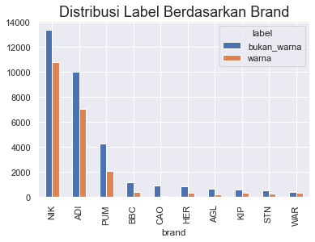

ColorSkim Machine Learning AI
# import modul dasar⁡⁡
import os
import random
import gc #garbage collector
import io
# import pandas, numpy dan tensorflow⁡
import pandas as pd
import numpy as np
import tensorflow as tf
# import daftar device terdeteksi oleh tensorflow
from tensorflow.python.client.device_lib import list_local_devices
# import utilitas umum tensorflow
from tensorflow.config import run_functions_eagerly # type: ignore
from tensorflow.data.experimental import enable_debug_mode # type: ignore
# import pembuatan dataset
from sklearn.model_selection import train_test_split
"""
karena struktur objek dalam tf.data.Dataset, from_tensor_slices()
tidak dapat dipanggil secara langsung dalam modul import
"""
from_tensor_slices = tf.data.Dataset.from_tensor_slices
zip = tf.data.Dataset.zip
# import preprocessing data
from sklearn.preprocessing import OneHotEncoder, LabelEncoder
import tensorflow_hub as hub
# import pipeline scikit untuk model_0
from sklearn.pipeline import Pipeline
# import layer neural network
from sklearn.feature_extraction.text import TfidfVectorizer
from sklearn.naive_bayes import MultinomialNB
from tensorflow.keras.layers import Input, Conv1D, Dense, GlobalMaxPooling1D, Bidirectional, LSTM, Dropout # type: ignore
from tensorflow.keras.layers import Concatenate # type: ignore
from tensorflow.keras.layers import TextVectorization # type: ignore
from tensorflow.keras.layers import Embedding # type: ignore
# import fungsi loss dan optimizer
from tensorflow.keras.losses import BinaryCrossentropy # type: ignore
from tensorflow.keras.optimizers import Adam # type: ignore
# import model Functional API tensorflow
from tensorflow.keras import Model # type: ignore
# import callbacks untuk tensorflow
from tensorflow.keras.callbacks import ModelCheckpoint, EarlyStopping, ReduceLROnPlateau # type: ignore
# import model terbaik, metriks dan alat evaluasi
from sklearn.metrics import accuracy_score, precision_recall_fscore_support, confusion_matrix
from tensorflow.keras.models import load_model # type: ignore
# import grafik
import matplotlib.pyplot as plt
import seaborn as sns
from tensorflow.keras.utils import plot_model # type: ignore
from scipy.stats import binned_statistic
# import display untuk menampilkan dataframe berdasar settingan tertentu (situasional)
from IPython.display import display
# import library log untuk training
import wandb as wb
from wandb.keras import WandbCallback
# import kunci untuk login wandb
from rahasia import API_KEY_WANDB # type: ignore
# set output tensorflow
run_functions_eagerly(True)
enable_debug_mode()
# set matplotlib untuk menggunakan tampilan seaborn
sns.set()
# cek ketersediaan GPU untuk modeling
# NVidia GeForce MX250 - office
# NVidia GeForce GTX1060 - home
list_local_devices()[1]
name: "/device:GPU:0"
device_type: "GPU"
memory_limit: 1408103015
locality {
bus_id: 1
links {
}
}
incarnation: 16803828788420614469
physical_device_desc: "device: 0, name: NVIDIA GeForce MX250, pci bus id: 0000:02:00.0, compute capability: 6.1"
xla_global_id: 416903419
Variabel Global
DIR_MODEL_CHECKPOINT = 'colorskim_checkpoint'
# kita akan mengatur toleransi_es sebagai fraksi (fraksi_toleransi) tertentu dari jumlah total epoch
# dan toleransi_rlop sebagai toleransi_es dibagi dengan jumlah kesempatan (kesempatan_rlop)
# dilakukannya reduksi pada learning_rate
EPOCHS = 1000
UKURAN_BATCH = 32
FRAKSI_TOLERANSI = 0.01
KESEMPATAN_RLOP = 5
TOLERANSI_ES = int(EPOCHS*FRAKSI_TOLERANSI)
TOLERANSI_RLOP = int(TOLERANSI_ES/KESEMPATAN_RLOP)
FRAKSI_REDUKSI_LR = 0.1
METRIK_MONITOR = 'val_accuracy'
RANDOM_STATE = 11
# untuk mencegah overfitting, kita akan memberikan ruang yang cukup besar
# untuk test_data dan memperkecil porsi train_data dengan jumlah epoch
# yang besar sehingga model masih memiliki waktu untuk melakukan
# training pada train_data
RASIO_TEST_TRAIN = 0.2
# wandb init
wandb = {'proyek': 'ColorSkim',
'user': 'jpao'}
# nama model
MODEL = ['model_0_multinomial_naive_bayes',
'model_1_Conv1D_vektorisasi_embedding',
'model_2_Conv1D_USE_embed',
'model_3_quadbrid_embedding']
Callbacks
Beberapa callbacks yang akan digunakan dalam proses training model diantaranya:
WandbCallback- Callback ke wandb.ai untuk mencatat log dari sesi training model.ModelCheckpoint- Untuk menyimpan model dengan val_loss terbaik dari seluruh epoch dalam training model.EarlyStopping(ES) - Callback ini digunakan untuk menghentikan proses training model jika selama beberapa epoch model tidak mengalami perbaikan pada metrik val_loss-nya. Callback ini juga digunakan bersama denganReduceLROnPlateaudimana patience ES > patience RLOP.ReduceLROnPlateau(RLOP) - Callback ini digunakan untuk memperkecil learning_rate dari model jika tidak mengalami perbaikan val_loss selama beberapa epoch.
Patience dari ES di-set lebih tinggi dari patience RLOP untuk memberikan kesempatan bagi RLOP untuk memperkecil learning_rate beberapa kali sebelum proses training model dihentikan oleh ES setelah tidak berhasil mendapatkan val_loss yang lebih baik selama beberapa epoch.
# Login ke wandb
wb.login(key=API_KEY_WANDB)
# Pembuatan fungsi callback
def wandb_callback(data_training):
return WandbCallback(save_model=False, # model akan disimpan menggunakan callback ModelCheckpoint
log_weights=True, # weight akan disimpan untuk visualisasi di wandb
log_gradients=True, # gradient akan disimpan untuk visualisasi di wandb
training_data=data_training)
def model_checkpoint(nama_model):
return ModelCheckpoint(filepath=os.path.join(DIR_MODEL_CHECKPOINT, nama_model),
verbose=0,
monitor=METRIK_MONITOR,
save_best_only=True) # model dengan 'val_loss' terbaik akan disimpan
def early_stopping():
return EarlyStopping(patience=TOLERANSI_ES,
monitor=METRIK_MONITOR)
def reduce_lr_on_plateau():
return ReduceLROnPlateau(factor=FRAKSI_REDUKSI_LR, # pengurangan learning_rate diset sebesar 0.1 * learning_rate
patience=TOLERANSI_RLOP,
monitor=METRIK_MONITOR,
verbose=0)
Failed to detect the name of this notebook, you can set it manually with the WANDB_NOTEBOOK_NAME environment variable to enable code saving.
[34m[1mwandb[0m: Currently logged in as: [33mjpao[0m ([33mpri-data[0m). Use [1m`wandb login --relogin`[0m to force relogin
[34m[1mwandb[0m: [33mWARNING[0m If you're specifying your api key in code, ensure this code is not shared publicly.
[34m[1mwandb[0m: [33mWARNING[0m Consider setting the WANDB_API_KEY environment variable, or running `wandb login` from the command line.
[34m[1mwandb[0m: Appending key for api.wandb.ai to your netrc file: C:\Users\jPao/.netrc
Data
Data yang dipergunakan adalah sebanyak 101,077 kata. Terdapat 2 versi data, data versi 1 hanya memiliki 56,751 kata dan data versi 2 adalah data lengkap.
- Data 1: 56,751 kata, terdiri dari 34,174 kata dengan label
bukan_warnadan 22,577 kata dengan labelwarnaatau rasio 1.51 : 1bukan_warnaberbandingwarna - Data 2: 101,077 kata, rincian menyusul....
brand, urut_kata dan total_kata akan digunakan sebagai alternatif variabel independen tambahan dalam model tertentu.
"""
Membaca data ke dalam DataFrame pandas
Merubah kolom `urut_kata` dan 'total_kata' menjadi float32
"""
data = pd.read_csv('data/setengah_dataset_artikel.csv')
data = data.astype({'urut_kata': np.float32, 'total_kata': np.float32})
# Untuk dokumentasi, gunakan format markdown untuk rendering dataframe
# print(data.to_markdown())
data
| brand | nama_artikel | kata | label | urut_kata | total_kata | |
|---|---|---|---|---|---|---|
| 0 | ADI | ADISSAGE-BLACK/BLACK/RUNWHT | ADISSAGE | bukan_warna | 1.0 | 4.0 |
| 1 | ADI | ADISSAGE-BLACK/BLACK/RUNWHT | BLACK | warna | 2.0 | 4.0 |
| 2 | ADI | ADISSAGE-BLACK/BLACK/RUNWHT | BLACK | warna | 3.0 | 4.0 |
| 3 | ADI | ADISSAGE-BLACK/BLACK/RUNWHT | RUNWHT | warna | 4.0 | 4.0 |
| 4 | ADI | ADISSAGE-N.NAVY/N.NAVY/RUNWHT | ADISSAGE | bukan_warna | 1.0 | 4.0 |
| ... | ... | ... | ... | ... | ... | ... |
| 56746 | WAR | 125CM PAISLEY WHITE FLAT | PAISLEY | warna | 2.0 | 4.0 |
| 56747 | WAR | 125CM PAISLEY WHITE FLAT | WHITE | warna | 3.0 | 4.0 |
| 56748 | WAR | 125CM VINTAGE ORANGE | 125CM | bukan_warna | 1.0 | 3.0 |
| 56749 | WAR | 125CM VINTAGE ORANGE | VINTAGE | warna | 2.0 | 3.0 |
| 56750 | WAR | 125CM VINTAGE ORANGE | ORANGE | warna | 3.0 | 3.0 |
56751 rows × 6 columns
Eksplorasi Data
# distribusi label dalam data
print(data['label'].value_counts())
data['label'].value_counts().plot(kind='bar')
plt.gca().set_title('Distribusi Label', fontsize=18)
bukan_warna 34174
warna 22577
Name: label, dtype: int64
Text(0.5, 1.0, 'Distribusi Label')

# distribusi label dalam brand (data hanya menunjukkan 10 teratas)
print(data[['brand', 'label']].value_counts().unstack().sort_values(by='bukan_warna', ascending=False)[:10])
data[['brand', 'label']].value_counts().unstack().sort_values(by='bukan_warna', ascending=False)[:10].plot(kind='bar')
plt.gca().set_title('Distribusi Label Berdasarkan Brand', fontsize=18)
label bukan_warna warna
brand
NIK 13396.0 10807.0
ADI 10028.0 7073.0
PUM 4279.0 2062.0
BBC 1174.0 367.0
CAO 887.0 61.0
HER 868.0 287.0
AGL 611.0 212.0
KIP 554.0 321.0
STN 494.0 255.0
WAR 404.0 298.0
Text(0.5, 1.0, 'Distribusi Label Berdasarkan Brand')

Konversi Fitur dan Label ke dalam numerik
Kita akan melakukan pengkonversian fitur dan label ke dalam bentuk numerik, dikarenakan jaringan saraf buatan hanya dapat bekerja dalam data numerik.
Terdapat dua jenis encoding untuk data yang bersifat kategorikal:
OneHotEncoderLabelEncoder
OneHotEncoder Encoding ini akan merubah data satu kolom menjadi multi-kolom dengan nilai 1 dan 0 dimana jumlah kolom sama dengan jumlah kategori, seperti berikut:
| brand | brand_NIK | brand_ADI | brand_SPE | brand_PIE | brand_... |
|---|---|---|---|---|---|
| NIK | 1 | 0 | 0 | 0 | ... |
| SPE | 0 | 0 | 1 | 0 | ... |
| PIE | 0 | 0 | 0 | 1 | ... |
| ADI | 0 | 1 | 0 | 0 | ... |
| SPE | 0 | 0 | 1 | 0 | ... |
| ... | ... | ... | ... | ... | ... |
LabelEncoder Encoding ini akan merubah data pada satu kolom menjadi 0, 1, 2, 3.. dstnya sesuai dengan jumlah kategorinya, seperti berikut:
| brand | brand_label_encoded |
|---|---|
| NIK | 0 |
| SPE | 1 |
| PIE | 2 |
| ADI | 3 |
| SPE | 1 |
| ... | ... |
Kapan menggunakan OneHotEncoder atau LabelEncoder dalam sebuah proses encoding? Kita dapat menggunakan OneHotEncoder ketika kita tidak menginginkan suatu bentuk hubungan hirarki di dalam data kategorikal yang kita miliki. Dalam hal ini ketika kita tidak ingin jaringan saraf buatan untuk memandang ADI (3) lebih signifikan dari NIK (0) dalam hal nilainya jika dilakukan label encoding, maka kita dapat menggunakan OneHotEncoder.
Jika kategori bersifat biner seperti 'Pria' atau 'Wanita', 'Ya' atau 'Tidak' dsbnya, penggunaan LabelEncoder dinilai lebih efektif.
Dengan pertimbangan di atas dan melihat struktur data kita, maka kita akan menggunakan
OneHotEncoderuntuk kolom brand (fitur) dan menggunakanLabelEncoderuntuk kolom label (target), kecuali untuk Model 0 yang akan menggunakan fungsi ekstraksi fitur denganTfIdfVectorizerkita hanya akan menggunakan kolom 'label' yang belum di-encode.
# OneHotEncoding pada fitur brand
fitur_encoder = OneHotEncoder(sparse=False)
brand_encoded = fitur_encoder.fit_transform(data['brand'].to_numpy().reshape(-1, 1))
df_fitur_encoded = pd.DataFrame(brand_encoded, columns=fitur_encoder.get_feature_names_out(['brand']))
# LabelEncoding pada target label
label_encoder = LabelEncoder()
label_encoded = label_encoder.fit_transform(data['label'])
df_label_encoded = pd.DataFrame(label_encoded, columns=['label_encoded'])
# gabungkan dengan dataframe awal
data_encoded = data.copy()
data_encoded = pd.concat([data_encoded,df_fitur_encoded, df_label_encoded], axis=1)
data_encoded
| brand | nama_artikel | kata | label | urut_kata | total_kata | brand_ADI | brand_ADS | brand_AGL | brand_AND | ... | brand_PTG | brand_PUM | brand_REL | brand_SAU | brand_SOC | brand_STN | brand_UME | brand_VAP | brand_WAR | label_encoded | |
|---|---|---|---|---|---|---|---|---|---|---|---|---|---|---|---|---|---|---|---|---|---|
| 0 | ADI | ADISSAGE-BLACK/BLACK/RUNWHT | ADISSAGE | bukan_warna | 1.0 | 4.0 | 1.0 | 0.0 | 0.0 | 0.0 | ... | 0.0 | 0.0 | 0.0 | 0.0 | 0.0 | 0.0 | 0.0 | 0.0 | 0.0 | 0 |
| 1 | ADI | ADISSAGE-BLACK/BLACK/RUNWHT | BLACK | warna | 2.0 | 4.0 | 1.0 | 0.0 | 0.0 | 0.0 | ... | 0.0 | 0.0 | 0.0 | 0.0 | 0.0 | 0.0 | 0.0 | 0.0 | 0.0 | 1 |
| 2 | ADI | ADISSAGE-BLACK/BLACK/RUNWHT | BLACK | warna | 3.0 | 4.0 | 1.0 | 0.0 | 0.0 | 0.0 | ... | 0.0 | 0.0 | 0.0 | 0.0 | 0.0 | 0.0 | 0.0 | 0.0 | 0.0 | 1 |
| 3 | ADI | ADISSAGE-BLACK/BLACK/RUNWHT | RUNWHT | warna | 4.0 | 4.0 | 1.0 | 0.0 | 0.0 | 0.0 | ... | 0.0 | 0.0 | 0.0 | 0.0 | 0.0 | 0.0 | 0.0 | 0.0 | 0.0 | 1 |
| 4 | ADI | ADISSAGE-N.NAVY/N.NAVY/RUNWHT | ADISSAGE | bukan_warna | 1.0 | 4.0 | 1.0 | 0.0 | 0.0 | 0.0 | ... | 0.0 | 0.0 | 0.0 | 0.0 | 0.0 | 0.0 | 0.0 | 0.0 | 0.0 | 0 |
| ... | ... | ... | ... | ... | ... | ... | ... | ... | ... | ... | ... | ... | ... | ... | ... | ... | ... | ... | ... | ... | ... |
| 56746 | WAR | 125CM PAISLEY WHITE FLAT | PAISLEY | warna | 2.0 | 4.0 | 0.0 | 0.0 | 0.0 | 0.0 | ... | 0.0 | 0.0 | 0.0 | 0.0 | 0.0 | 0.0 | 0.0 | 0.0 | 1.0 | 1 |
| 56747 | WAR | 125CM PAISLEY WHITE FLAT | WHITE | warna | 3.0 | 4.0 | 0.0 | 0.0 | 0.0 | 0.0 | ... | 0.0 | 0.0 | 0.0 | 0.0 | 0.0 | 0.0 | 0.0 | 0.0 | 1.0 | 1 |
| 56748 | WAR | 125CM VINTAGE ORANGE | 125CM | bukan_warna | 1.0 | 3.0 | 0.0 | 0.0 | 0.0 | 0.0 | ... | 0.0 | 0.0 | 0.0 | 0.0 | 0.0 | 0.0 | 0.0 | 0.0 | 1.0 | 0 |
| 56749 | WAR | 125CM VINTAGE ORANGE | VINTAGE | warna | 2.0 | 3.0 | 0.0 | 0.0 | 0.0 | 0.0 | ... | 0.0 | 0.0 | 0.0 | 0.0 | 0.0 | 0.0 | 0.0 | 0.0 | 1.0 | 1 |
| 56750 | WAR | 125CM VINTAGE ORANGE | ORANGE | warna | 3.0 | 3.0 | 0.0 | 0.0 | 0.0 | 0.0 | ... | 0.0 | 0.0 | 0.0 | 0.0 | 0.0 | 0.0 | 0.0 | 0.0 | 1.0 | 1 |
56751 rows × 44 columns
Konversi Data ke dalam Train dan Test untuk Model 0
Data akan dibagi ke dalam train dan test data menggunakan metode train_test_split dari modul sklearn.model_selection dengan menggunakan rasio dan keacakan yang telah ditentukan di variabel global (lihat RASIO_TEST_TRAIN dan RANDOM_STATE).
# Menyimpan header data
data_header = data_encoded[['kata', 'brand', 'urut_kata', 'total_kata', 'label']].columns
"""
Model 0 adalah MultinomialNB yang akan menggunakan feature_extraction TfIdfVectorizer
dimana TfIdfVectorizer hanya dapat menerima satu kolom data yang akan diubah menjadi vector
(angka), kecuali kita dapat menggabungkan kembali brand kata dan kolom kolom lainnya ke dalam
satu kolom seperti['NIK GREEN 1 0 0 0 1'] alih - alih [['NIK', 'GREEN', '1', '0', '0', '0', '1']]
Maka untuk Model 0 kita tetap akan hanya menggunakan kolom 'kata' sebagai fitur.
kolom 'brand', 'urut_kata' 'total_kata' dan 'label' sebenarnya tidak akan
digunakan untuk training, namun pada train_test_split ini kita akan menyimpan brand untuk
display hasil prediksi berbanding dengan target label (ground truth)
"""
train_data_mnb, test_data_mnb, train_target_mnb, test_target_mnb = train_test_split(data_encoded[['kata', 'brand', 'urut_kata', 'total_kata', 'label']],
data_encoded['label_encoded'],
test_size=RASIO_TEST_TRAIN,
random_state=RANDOM_STATE)
# Untuk model lainnya kita akan menggunakan semua fitur minus 'brand', 'nama_artikel', 'label' dan 'label_encoded' .drop
train_data, test_data, train_target, test_target = train_test_split(data_encoded.drop(['brand', 'nama_artikel', 'label', 'label_encoded'], axis=1),
data_encoded['label_encoded'],
test_size=RASIO_TEST_TRAIN,
random_state=RANDOM_STATE)
train_data_mnb.shape, test_data_mnb.shape, train_target_mnb.shape, test_target_mnb.shape
((45400, 5), (11351, 5), (45400,), (11351,))
train_data.shape, test_data.shape, train_target.shape, test_target.shape
((45400, 40), (11351, 40), (45400,), (11351,))
# Eksplorasi contoh hasil split train dan test
train_target_unik, train_target_hitung = np.unique(train_target_mnb, return_counts=True)
test_target_unik, test_target_hitung = np.unique(test_target_mnb, return_counts=True)
print(f'2 data pertama di train_data_mnb:\n{train_data_mnb.iloc[:2, 0].tolist()}\n') # :2 menampilkan 2 data pertama, :1 hanya menampilkan kata
print(f'2 data pertama di train_data:')
with pd.option_context('display.max_columns', None):
display(train_data[:2])
print(f'\n2 label pertama di train_target (mnb & non-mnb, sama):\n{train_target[:2].tolist()}\n')
print(f'2 data pertama di test_data_mnb:\n{test_data_mnb.iloc[:2, 0].tolist()}\n') # :2 menampilkan 2 data pertama, :1 hanya menampilkan kata
print(f'2 data pertama di test_data:')
with pd.option_context('display.max_columns', None):
display(test_data[:2])
print(f'2 label pertama di test_target (mnb & non-mnb, sama):\n{test_target[:2].tolist()}\n')
train_target_distribusi = np.column_stack((train_target_unik, train_target_hitung))
test_target_distribusi = np.column_stack((test_target_unik, test_target_hitung))
print(f'Distribusi label (target) di train: \n{train_target_distribusi}\n')
print(f'Distribusi label (target) di test: \n{test_target_distribusi}\n')
print('Dimana label 0 = bukan warna dan label 1 = warna')
2 data pertama di train_data_mnb:
['GREY', 'BLACK']
2 data pertama di train_data:
| kata | urut_kata | total_kata | brand_ADI | brand_ADS | brand_AGL | brand_AND | brand_ASC | brand_BAL | brand_BBC | brand_BEA | brand_CAO | brand_CIT | brand_CRP | brand_DOM | brand_FIS | brand_GUE | brand_HER | brand_JAS | brand_KIP | brand_NEW | brand_NFA | brand_NFC | brand_NFL | brand_NIB | brand_NIC | brand_NIK | brand_NPS | brand_ODD | brand_PBY | brand_PSB | brand_PTG | brand_PUM | brand_REL | brand_SAU | brand_SOC | brand_STN | brand_UME | brand_VAP | brand_WAR | |
|---|---|---|---|---|---|---|---|---|---|---|---|---|---|---|---|---|---|---|---|---|---|---|---|---|---|---|---|---|---|---|---|---|---|---|---|---|---|---|---|---|
| 43886 | GREY | 12.0 | 12.0 | 0.0 | 0.0 | 0.0 | 0.0 | 0.0 | 0.0 | 0.0 | 0.0 | 0.0 | 0.0 | 0.0 | 0.0 | 0.0 | 0.0 | 0.0 | 0.0 | 0.0 | 0.0 | 0.0 | 0.0 | 0.0 | 0.0 | 0.0 | 1.0 | 0.0 | 0.0 | 0.0 | 0.0 | 0.0 | 0.0 | 0.0 | 0.0 | 0.0 | 0.0 | 0.0 | 0.0 | 0.0 |
| 14859 | BLACK | 4.0 | 4.0 | 1.0 | 0.0 | 0.0 | 0.0 | 0.0 | 0.0 | 0.0 | 0.0 | 0.0 | 0.0 | 0.0 | 0.0 | 0.0 | 0.0 | 0.0 | 0.0 | 0.0 | 0.0 | 0.0 | 0.0 | 0.0 | 0.0 | 0.0 | 0.0 | 0.0 | 0.0 | 0.0 | 0.0 | 0.0 | 0.0 | 0.0 | 0.0 | 0.0 | 0.0 | 0.0 | 0.0 | 0.0 |
2 label pertama di train_target (mnb & non-mnb, sama):
[1, 1]
2 data pertama di test_data_mnb:
['SESOYE', 'GHOST']
2 data pertama di test_data:
| kata | urut_kata | total_kata | brand_ADI | brand_ADS | brand_AGL | brand_AND | brand_ASC | brand_BAL | brand_BBC | brand_BEA | brand_CAO | brand_CIT | brand_CRP | brand_DOM | brand_FIS | brand_GUE | brand_HER | brand_JAS | brand_KIP | brand_NEW | brand_NFA | brand_NFC | brand_NFL | brand_NIB | brand_NIC | brand_NIK | brand_NPS | brand_ODD | brand_PBY | brand_PSB | brand_PTG | brand_PUM | brand_REL | brand_SAU | brand_SOC | brand_STN | brand_UME | brand_VAP | brand_WAR | |
|---|---|---|---|---|---|---|---|---|---|---|---|---|---|---|---|---|---|---|---|---|---|---|---|---|---|---|---|---|---|---|---|---|---|---|---|---|---|---|---|---|
| 16829 | SESOYE | 5.0 | 6.0 | 1.0 | 0.0 | 0.0 | 0.0 | 0.0 | 0.0 | 0.0 | 0.0 | 0.0 | 0.0 | 0.0 | 0.0 | 0.0 | 0.0 | 0.0 | 0.0 | 0.0 | 0.0 | 0.0 | 0.0 | 0.0 | 0.0 | 0.0 | 0.0 | 0.0 | 0.0 | 0.0 | 0.0 | 0.0 | 0.0 | 0.0 | 0.0 | 0.0 | 0.0 | 0.0 | 0.0 | 0.0 |
| 5081 | GHOST | 1.0 | 4.0 | 1.0 | 0.0 | 0.0 | 0.0 | 0.0 | 0.0 | 0.0 | 0.0 | 0.0 | 0.0 | 0.0 | 0.0 | 0.0 | 0.0 | 0.0 | 0.0 | 0.0 | 0.0 | 0.0 | 0.0 | 0.0 | 0.0 | 0.0 | 0.0 | 0.0 | 0.0 | 0.0 | 0.0 | 0.0 | 0.0 | 0.0 | 0.0 | 0.0 | 0.0 | 0.0 | 0.0 | 0.0 |
2 label pertama di test_target (mnb & non-mnb, sama):
[1, 0]
Distribusi label (target) di train:
[[ 0 27355]
[ 1 18045]]
Distribusi label (target) di test:
[[ 0 6819]
[ 1 4532]]
Dimana label 0 = bukan warna dan label 1 = warna
Model 0: Model Dasar
Model pertama yang akan kita buat adalah model Multinomial Naive-Bayes yang akan mengkategorisasikan input ke dalam kategori output. Multinomial Naive-Bayes adalah sebuah algoritma dengan metode supervised learning yang paling umum digunakan dalam pengkategorisasian data tekstual.
Pada dasarnya Naive-Bayes merupakan algoritma yang menghitung probabilitas dari sebuah event (output) berdasarkan probabilitas akumulatif kejadian dari event sebelumnya. Secara singkat algoritma ini akan mempelajari berapa probabilitas dari sebuah kata, misalkan 'ADISSAGE' adalah sebuah label bukan_warna berdasarkan probabilitas kejadian 'ADISSAGE' adalah bukan_warna pada event - event sebelumnya.
Formula dari probabilitias algoritma Naive-Bayes:
\(P(A|B) = \frac{P(A) * P(B|A)}{P(B)}\)
Sebelum melakukan training menggunakan algoritma Multinomial Naive-Bayes kita perlu untuk merubah data kata menjadi bentuk numerik yang kali ini akan dikonversi menggunakan metode TF-IDF (Term Frequency-Inverse Document Frequency). TF-IDF sendiri merupakan metode yang akan berusaha memvaluasi nilai relevansi dan frekuensi dari sebuah kata dalam sekumpulan dokumen. Term Frequency merujuk pada seberapa sering sebuah kata muncul dalam 1 dokumen, sedangkan Inverse Document Frequency adalah perhitungan logaritma dari jumlah seluruh dokumen dibagi dengan jumlah dokumen dengan kata yang dimaksud terdapat di dalamnya. Hasil perhitungan dari TF dan IDF ini akan dikalikan untuk mendapatkan nilai dari seberapa sering dan seberapa relevan nilai dari sebuah kata. Misalkan 'ADISSAGE' sering muncul dalam 1 dokumen tapi tidak terlalu banyak muncul di dokumen - dokumen lainnya, maka hal ini dapat mengindikasikan bahwa kata 'ADISSAGE' mungkin memiliki relevansi yang tinggi dalam kategorisasi sebuah dokumen, sebaliknya jika kata 'WHITE' sering muncul di 1 dokumen dan juga sering muncul di dokumen - dokumen lainnya, maka kata 'WHITE' ini mungkin merupakan sebuah kata yang umum dan memiliki nilai relevansi yang rendah dalam pengkategorisasian sebuah dokumen.
Untuk lebih lengkapnya mengenai Naive-Bayes dan TF-IDF dapat merujuk pada sumber berikut:
- https://towardsdatascience.com/naive-bayes-classifier-81d512f50a7c
- https://monkeylearn.com/blog/what-is-tf-idf/
# Membuat pipeline untuk mengubah kata ke dalam tf-idf
model_0 = Pipeline([
("tf-idf", TfidfVectorizer()),
("clf", MultinomialNB())
])
# Fit pipeline dengan data training
model_0.fit(X=np.squeeze(train_data_mnb.iloc[:, 0]), y=train_target_mnb)
Pipeline(steps=[('tf-idf', TfidfVectorizer()), ('clf', MultinomialNB())])In a Jupyter environment, please rerun this cell to show the HTML representation or trust the notebook. On GitHub, the HTML representation is unable to render, please try loading this page with nbviewer.org.
Pipeline(steps=[('tf-idf', TfidfVectorizer()), ('clf', MultinomialNB())])TfidfVectorizer()
MultinomialNB()
# Evaluasi model_0 pada data test
skor_model_0 = model_0.score(X=np.squeeze(test_data_mnb.iloc[:, 0]), y=test_target_mnb)
skor_model_0
0.9921592811206061
Eksplorasi Hasil Model 0
Pada hasil training dengan menggunakan model algoritma Multinomial Naive-Bayes kita mendapatkan akurasi sebesar ~99.22%
Secara sekilas model yang pertama ini (model 0) memberikan akurasi yang sangat tinggi dalam membedakan kata warna dan bukan_warna. Namun secara brand speisifik, akurasi ini mungkin akan lebih buruk karena di beberapa brand terutama 'PUM' kita dapat menjumpai artikel dengan nama misalkan 'PUMA XTG WOVEN PANTS PUMA BLACK-PUMA WHITE' dimana kata PUMA pertama adalah bukan_warna namun kata PUMA kedua dan ketiga adalah bagian dari warna.
Dengan demikian, nanti kita mungkin akan mengulas lebih mendalam model pertama ini menggunakan dataset yang dipisahkan berdasar brand. Untuk sementara kita akan melanjutkan mengembangkan model - model alternatif untuk pemisahan bukan_warna dan warna dari nama artikel.
# Membuat prediksi menggunakan data test
model_0_pred = model_0.predict(np.squeeze(test_data_mnb.iloc[:, 0]))
model_0_pred
array([1, 0, 1, ..., 0, 0, 0])
# Membuat fungsi dasar untuk menghitung accuray, precision, recall, f1-score
def hitung_metrik(target, prediksi):
"""
Menghitung accuracy, precision, recall dan f1-score dari model klasifikasi biner
Args:
target: label yang sebenarnya dalam bentuk 1D array
prediksi: label yang diprediksi dalam bentuk 1D array
Returns:
nilai accuracy, precision, recall dan f1-score dalam bentuk dictionary
"""
# Menghitung akurasi model
model_akurasi = accuracy_score(target, prediksi)
# Menghitung precision, recall, f1-score dan support dari model
model_presisi, model_recall, model_f1, _ = precision_recall_fscore_support(target, prediksi, average='weighted')
hasil_model = {'akurasi': model_akurasi,
'presisi': model_presisi,
'recall': model_recall,
'f1-score': model_f1}
return hasil_model
# Menghitung metrik dari model_0
model_0_metrik = hitung_metrik(target=test_target_mnb,
prediksi=model_0_pred)
model_0_metrik
{'akurasi': 0.9921592811206061,
'presisi': 0.9921602131872556,
'recall': 0.9921592811206061,
'f1-score': 0.9921562044603152}
Akurasi merupakan metrik yang menghitung jumlah prediksi yang benar dibanding total jumlah label yang dijadikan evaluasi (test data, bukan training data).
\(\frac{\text{prediksi benar}}{\text{total prediksi}}\)
Presisi merupakan metrik yang menghitung true positive berbanding dengan true positive dan false positive
\(\frac{\text{true positive}}{\text{true positive } + \text{ false positive}}\)
Recall merupakan metrik yang menghitung true positive berbanding dengan true positive dan false negative
\(\frac{\text{true positive}}{\text{true positive } + \text{ false negative}}\)
f1-score merupakan metrik yang mengabungkan presisi dan recall
\(2 * \frac{\text{presisi } * \text{ recall}}{\text{presisi } + \text{ recall}}\)
Dimana:
- True Positive (TP): Prediksi
warnapada target labelwarna - False Positive (FP): Prediksi
warnapada target labelbukan_warna - True Negative (TN): Prediksi
bukan_warnapada target labelbukan_warna - False Negative (FN): Prediksi
bukan_warnapada target labelwarna
# Membuat confusion matrix untuk prediksi model_0
# cf_matrix = confusion_matrix(test_target_mnb, pred_model_0)
# Menampilkan confusion matrix menggunakan seaborn
# ax = sns.heatmap(cf_matrix, annot=True, fmt='d', cmap='Blues')
# ax.set_title(f'Confusion Matrix Model 0 - Akurasi {skor_model_0:.2%}')
# ax.set_xlabel('Prediksi')
# ax.set_ylabel('Label')
# label tick
# ax.xaxis.set_ticklabels(['bukan_warna', 'warna'])
# ax.yaxis.set_ticklabels(['bukan_warna', 'warna'])
# Tampilkan
# plt.show()
"""
Merubah confusion matrix ke dalam fungsi
"""
def plot_conf_matrix(target_label,
prediksi_label,
nama_model,
akurasi,
label_titik_x,
label_titik_y):
"""
Fungsi ini akan menampilkan matrix confusion untuk perbandingan
target label dan prediksi label dan memahami seberapa kesulitan
sebuah model melakukan prediksi
Args:
target_label (list atau 1D-array): label yang sebenarnya dalam bentuk 1D array
prediksi_label (list atau 1D-array): label yang diprediksi dalam bentuk 1D array
akurasi (float): akurasi model dalam bentuk float
label_titik_x dan label_titik_y, keduanya merupakan list dari sekumpulan
string dan harus dalam vector shape yang sama
label_titik_x (list str): label untuk x-axis dalam bentuk list
label_titik_y (list str): label untuk y-axis dalam bentuk list
Returns:
plot_confusion_matrix
"""
# Membuat confusion matrix
cf_matrix = confusion_matrix(target_label,
prediksi_label)
# Pengaturan confusion_matrix menggunakan seaborn
plot_confusion_matrix = sns.heatmap(cf_matrix, annot=True, fmt='d', cmap='Blues')
plot_confusion_matrix.set_title(f'Confusion Matrix\n{nama_model}\nAkurasi {akurasi:.2%}', fontsize=18)
plot_confusion_matrix.set_xlabel('Prediksi Label')
plot_confusion_matrix.set_ylabel('Target Label')
plot_confusion_matrix.xaxis.set_ticklabels(label_titik_x)
plot_confusion_matrix.yaxis.set_ticklabels(label_titik_y)
return plot_confusion_matrix
# Menampilkan confusion matrix untuk model_0
plot_conf_matrix(target_label=test_target_mnb,
prediksi_label=model_0_pred,
nama_model='Model 0 Multinomial Naive Bayes',
akurasi=model_0_metrik['akurasi'],
label_titik_x=['bukan_warna', 'warna'],
label_titik_y=['bukan_warna', 'warna'])
plt.show()

Pada tabel Confusion Matrix di atas kita dapat melihat bahwa Model 0 berhasil memprediksi secara tepat 6,785 kata dengan label bukan_warna dan 4,477 kata dengan label warna.
Terdapat setidaknya 55 kata yang merupakan warna namun diprediksi oleh Model 0 sebagai bukan_warna dan 34 kata yang merupakan bukan_warna namun diprediksi oleh Model 0 sebagai warna
# Membuat fungsi untuk menampilkan kesalahan model dalam dataframe
def df_kesalahan_prediksi(label_encoder,
test_data,
prediksi,
probabilitas_prediksi=None,
order_ulang_header=None):
"""
(penting) Fungsi ini akan menerima objek label encoder sklearn, set test_data
(penting) sebelum modifikasi encoding fitur dan label, prediksi dari model
(penting) serta urutan order_ulang_header jika diperlukan
Args:
label_encoder (obyek LabelEncoder sklear.preprocessing): obyek label encoder dari sklearn.preprocessing
test_data (pd.DataFrame): dataframe lengkap sebelum modifikasi fitur dan label
prediksi (tf.Tensor): tensor dengan shape 1 dimensi yang memuat prediksi model
order_ulang_header (list): list dengan urutan header yang diinginkan
Returns:
pd.DataFrame yang diprint dengan format markdown
"""
inverse_label_encoder = list(label_encoder.inverse_transform([0, 1]))
if order_ulang_header is None:
data_final = pd.DataFrame(test_data)
elif type(order_ulang_header) is list:
data_final = pd.DataFrame(test_data)[order_ulang_header]
else:
raise TypeError('order_ulang_header harus berupa list')
kolom_pred = pd.DataFrame(np.int8(prediksi), columns=['prediksi'])
kolom_prob_pred = pd.DataFrame(probabilitas_prediksi, columns=['probabilitas']) * 100
data_final['prediksi'] = kolom_pred.iloc[:, 0].tolist()
if probabilitas_prediksi is not None:
data_final['probabilitas'] = kolom_prob_pred.iloc[:, 0].tolist()
data_final['probabilitas'] = data_final['probabilitas'].round(2).astype(str) + '%'
data_final['prediksi'] = data_final['prediksi'].astype(int).map(lambda x: inverse_label_encoder[x])
data_final = data_final.loc[data_final['label'] != data_final['prediksi']]
with pd.option_context('display.max_rows', None):
print(data_final.to_markdown())
# Menampilkan kesalahan prediksi
df_kesalahan_prediksi(label_encoder=label_encoder,
test_data=test_data_mnb,
prediksi=model_0_pred,
order_ulang_header=['brand',
'kata',
'urut_kata',
'total_kata',
'label'])
| | brand | kata | urut_kata | total_kata | label | prediksi |
|------:|:--------|:------------|------------:|-------------:|:------------|:------------|
| 55259 | STN | AQUA | 3 | 3 | warna | bukan_warna |
| 12 | ADI | BASKETBALL | 5 | 6 | warna | bukan_warna |
| 23355 | NIC | 7 | 11 | 11 | warna | bukan_warna |
| 56444 | WAR | OREO | 2 | 3 | warna | bukan_warna |
| 46960 | NIK | FTR10PURE | 2 | 7 | warna | bukan_warna |
| 13918 | ADI | CARDBOARD | 2 | 2 | warna | bukan_warna |
| 8735 | ADI | FULL | 1 | 3 | bukan_warna | warna |
| 31091 | NIK | VIALEBLACK | 2 | 4 | warna | bukan_warna |
| 51267 | PUM | TRACE | 2 | 7 | bukan_warna | warna |
| 5964 | ADI | CLOUD | 2 | 3 | warna | bukan_warna |
| 36008 | NIK | SIGNAL | 2 | 11 | bukan_warna | warna |
| 808 | ADI | LEGIVY | 6 | 6 | warna | bukan_warna |
| 19560 | BBC | WOODLAND | 1 | 6 | bukan_warna | warna |
| 56083 | WAR | GLOW | 2 | 6 | bukan_warna | warna |
| 18933 | BBC | FULL | 1 | 8 | bukan_warna | warna |
| 55981 | STN | OATMEAL | 2 | 2 | warna | bukan_warna |
| 33831 | NIK | EXPX14WHITE | 2 | 4 | warna | bukan_warna |
| 48650 | PUM | CORE | 2 | 6 | bukan_warna | warna |
| 56746 | WAR | PAISLEY | 2 | 4 | warna | bukan_warna |
| 1405 | ADI | PK | 2 | 4 | warna | bukan_warna |
| 56116 | WAR | FULL | 1 | 6 | bukan_warna | warna |
| 56086 | WAR | GLOW | 2 | 6 | bukan_warna | warna |
| 17275 | AGL | 5 | 5 | 6 | warna | bukan_warna |
| 52109 | PUM | GLOW | 3 | 7 | bukan_warna | warna |
| 26752 | NIK | PEELORANGE | 6 | 7 | warna | bukan_warna |
| 55804 | STN | VOLT | 2 | 2 | warna | bukan_warna |
| 12023 | ADI | LEGEND | 2 | 3 | warna | bukan_warna |
| 8962 | ADI | CORE | 2 | 4 | bukan_warna | warna |
| 1039 | ADI | TESIME | 6 | 6 | warna | bukan_warna |
| 8759 | ADI | ACTIVE | 3 | 7 | warna | bukan_warna |
| 52114 | PUM | GLOW | 3 | 8 | bukan_warna | warna |
| 13740 | ADI | MAROON | 2 | 2 | warna | bukan_warna |
| 10573 | ADI | METAL | 2 | 3 | warna | bukan_warna |
| 56484 | WAR | NEON | 2 | 5 | warna | bukan_warna |
| 46940 | NIK | REACTBRIGHT | 2 | 7 | warna | bukan_warna |
| 15761 | ADI | ALUMINA | 3 | 3 | warna | bukan_warna |
| 48805 | PUM | CORE | 2 | 7 | bukan_warna | warna |
| 2197 | ADI | EASGRN | 7 | 7 | warna | bukan_warna |
| 1403 | ADI | F17 | 4 | 4 | warna | bukan_warna |
| 2592 | ADI | ICEPUR | 2 | 4 | warna | bukan_warna |
| 7372 | ADI | SGREEN | 2 | 4 | warna | bukan_warna |
| 10336 | ADI | MAROON | 2 | 2 | warna | bukan_warna |
| 15466 | ADI | SAVANNAH | 2 | 2 | warna | bukan_warna |
| 54951 | SAU | TAN | 2 | 3 | warna | bukan_warna |
| 22780 | KIP | SHADOW | 2 | 4 | warna | bukan_warna |
| 56226 | WAR | ORANGE | 2 | 5 | bukan_warna | warna |
| 56112 | WAR | RED | 1 | 7 | bukan_warna | warna |
| 17198 | AGL | YELLOW | 2 | 5 | bukan_warna | warna |
| 50395 | PUM | PUMA | 2 | 5 | warna | bukan_warna |
| 32998 | NIK | 23 | 10 | 11 | warna | bukan_warna |
| 48075 | PTG | ORANGE | 2 | 3 | bukan_warna | warna |
| 54953 | SAU | BRN | 2 | 3 | warna | bukan_warna |
| 19265 | BBC | DARK | 2 | 6 | bukan_warna | warna |
| 56661 | WAR | THE | 2 | 5 | warna | bukan_warna |
| 4222 | ADI | SESAME | 5 | 7 | warna | bukan_warna |
| 52841 | PUM | CORE | 1 | 7 | bukan_warna | warna |
| 8968 | ADI | CORE | 2 | 4 | bukan_warna | warna |
| 1407 | ADI | CARGO | 4 | 4 | warna | bukan_warna |
| 7274 | ADI | SESAME | 2 | 4 | warna | bukan_warna |
| 3490 | ADI | SHOCK | 2 | 3 | warna | bukan_warna |
| 21685 | HER | NIGHT | 2 | 3 | warna | bukan_warna |
| 18208 | BBC | CLEAR | 2 | 8 | bukan_warna | warna |
| 14727 | ADI | LEGEND | 2 | 3 | warna | bukan_warna |
| 33814 | NIK | EXPZ07WHITE | 2 | 3 | warna | bukan_warna |
| 30639 | NIK | 35 | 5 | 11 | bukan_warna | warna |
| 21386 | HER | BRBDSCHRY | 2 | 3 | warna | bukan_warna |
| 8965 | ADI | CORE | 2 | 4 | bukan_warna | warna |
| 16112 | ADI | VAPOUR | 2 | 3 | warna | bukan_warna |
| 11545 | ADI | ACTIVE | 3 | 4 | warna | bukan_warna |
| 4659 | ADI | BOAQUA | 2 | 4 | warna | bukan_warna |
| 21982 | HER | FLORAL | 2 | 3 | warna | bukan_warna |
| 21091 | HER | 600D | 3 | 6 | bukan_warna | warna |
| 17520 | AGL | BROWN | 1 | 4 | bukan_warna | warna |
| 10328 | ADI | ACTIVE | 2 | 3 | warna | bukan_warna |
| 48153 | PTG | DOVE | 2 | 3 | bukan_warna | warna |
| 19643 | BEA | 35 | 2 | 3 | bukan_warna | warna |
| 16288 | ADI | BLK | 2 | 5 | bukan_warna | warna |
| 21174 | HER | RED | 4 | 8 | bukan_warna | warna |
| 30654 | NIK | 35 | 5 | 10 | bukan_warna | warna |
| 29098 | NIK | 8ASHEN | 3 | 6 | warna | bukan_warna |
| 53459 | PUM | GLOW | 1 | 5 | bukan_warna | warna |
| 55759 | STN | RASTA | 2 | 2 | warna | bukan_warna |
| 18940 | BBC | FULL | 1 | 8 | bukan_warna | warna |
| 656 | ADI | BGREEN | 7 | 7 | warna | bukan_warna |
| 54972 | SAU | VINTAGE | 2 | 5 | bukan_warna | warna |
| 6532 | ADI | SESAME | 6 | 7 | warna | bukan_warna |
| 25371 | NIK | 23 | 6 | 6 | warna | bukan_warna |
| 24154 | NIK | CORE | 2 | 6 | bukan_warna | warna |
| 31572 | NIK | LIGHTCARBON | 4 | 6 | warna | bukan_warna |
Model 1: Conv1D dengan Embedding
Conv1D atau 1-dimension convolution merupakan satu jenis layer dari layer convolution yang umumnya digunakan untuk mengekstrak fitur penting dari input data.
Meskipun umumnya jaringan saraf tiruan convolution digunakan untuk klasifikasi gambar (Conv2D) pada pembelajaran image recognition, tidak jarang juga Conv1D dipergunakan dalam natural language processing atau time series forecasting.
Layer ini pada prinsipnya menggunakan kernel_size, padding dan juga stride untuk menciptakan sebuah jendela yang akan men-scan input matrix atau vektor secara perlahan dan melakukan pooling (min, max atau average pooling) untuk mengekstrak nilai yang menjadi fitur penting dari input data.

contoh Conv2D pada jaringan saraf tiruan untuk klasifikasi biner/multiclass dari input gambar
Lebih lanjut mengenai jaringan saraf tiruan convolution (convolutional neural network) dapat merujuk pada CNN Explainer
Vektorisasi dan Embedding Kata
Membuat Lapisan Vektorisasi Kata
Vektorisasi sebenarnya merupakan proses yang cukup sederhana yang merubah kata menjadi representasi numerik berdasarkan total jumlah kata dalam vocabulary dari input data.
Di lapisan vektorisasi ini sebenarnya kita melakukan beberapa proses pengolahan terhadap teks yang bersifat opsional, diantaranya:
- Standarisasi kata, merubah semua kata menjadi lowercase dan menghilangkan tanda baca (punctuation)
- Split setiap input teks menjadi per kata (untuk input yang berupa kalimat)
- Pembentukan ngrams pada corpus. Apa itu ngrams dan text corpus.
- Indeksasi token (kata)
- Transformasi setiap input menggunakan indeksasi token untuk menghasilkan vektor integer atau vektor angka float
Sedangkan embedding adalah proses lebih lanjut setelah vektorisasi kata ke dalam representasi numerik. Pada dasarnya embedding adalah sebuah lapisan yang akan memberikan kemampuan untuk menyimpan bobot awal (initial weight) dan juga bobot yang nilainya akan diupdate selama proses training untuk kata dalam input data.
Sebenarnya tujuan dari proses embedding adalah untuk merubah kata per kata dalam sebuah kalimat dalam satu representasi vektor dengan panjang yang sama (dalam kasus universal sentence embedding adalah vektor dengan panjang 512) dan merata - ratakan nilai dari kesemua vektor per kata dalam kalimat menjadi satu vektor yang digunakan sebagai acuan klasifikasi, pengelompokan (clustring) atau deteksi.
Meskipun dalam kasus ColorSkim ini yang coba kita lakukan adalah melakukan klasifikasi per kata dan bukan merupakan klasifikasi per kalimat, proses embedding masih dapat menjadi satu faktor yang penting dalam melakukan update bobot (weights) untuk setiap neuron di dalam lapisan model yang dipergunakan melalui proses backpropagation.

Pada akhir proses training, bobot dari suatu kata sudah melalui beberapa ratus putaran training (epoch) dari jaringan saraf tiruan dan diharapkan sudah memiliki nilai yang lebih akurat untuk merepresentasikan keadaan (state) dari suatu kata terhadap kategori kata atau kalimat yang menjadi target dari proses training.
Lebih lengkapnya dapat merujuk pada link berikut:
- Lapisan Vektorisasi Teks: https://www.tensorflow.org/api_docs/python/tf/keras/layers/TextVectorization
- Lapisan Embedding Teks: https://www.tensorflow.org/text/guide/word_embeddings
# jumlah data (kata) dalam train_data
print(f'jumlah data: {len(train_data.kata)}\n')
train_data.kata[:3]
jumlah data: 45400
43886 GREY
14859 BLACK
47729 U
Name: kata, dtype: object
# jumlah data unik (kata unik) dalam train_data[:, 0]
jumlah_kata_train = len(np.unique(train_data.kata))
jumlah_kata_train
2957
# Membuat lapisan vektorisasi kata
lapisan_vektorisasi = TextVectorization(max_tokens=jumlah_kata_train,
output_sequence_length=1,
standardize='lower_and_strip_punctuation',
name='lapisan_vektorisasi')
# Mengadaptasikan lapisan vektorisasi ke dalam train_kata
lapisan_vektorisasi.adapt(train_data.kata.tolist())
# Uji vektorisasi kata
target_kata = random.choice(train_data.kata.tolist())
print(f'Kata:\n{target_kata}\n')
print(f'Kata setelah vektorisasi:\n{lapisan_vektorisasi([target_kata])}')
Kata:
LEGEND
Kata setelah vektorisasi:
[[48]]
# konfigurasi lapisan vektorisasi
lapisan_vektorisasi.get_config()
{'name': 'lapisan_vektorisasi',
'trainable': True,
'batch_input_shape': (None,),
'dtype': 'string',
'max_tokens': 2957,
'standardize': 'lower_and_strip_punctuation',
'split': 'whitespace',
'ngrams': None,
'output_mode': 'int',
'output_sequence_length': 1,
'pad_to_max_tokens': False,
'sparse': False,
'ragged': False,
'vocabulary': None,
'idf_weights': None}
# Jumlah vocabulary dalam lapisan_vektorisasi
jumlah_vocab = lapisan_vektorisasi.get_vocabulary()
len(jumlah_vocab)
2906
Membuat Lapisan Text Embedding
# Membuat lapisan embedding kata
lapisan_embedding = Embedding(input_dim=len(jumlah_vocab),
output_dim=UKURAN_BATCH,
mask_zero=True,
name='lapisan_embedding')
# Contoh vektorisasi dan embedding
print(f'Kata sebelum vektorisasi:\n{target_kata}\n')
kata_tervektor = lapisan_vektorisasi([target_kata])
print(f'\nKata sesudah vektorisasi (sebelum embedding):\n{kata_tervektor}\n')
kata_terembed = lapisan_embedding(kata_tervektor)
print(f'\nKata setelah embedding:\n{kata_terembed}\n')
print(f'Shape dari kata setelah embedding:\n{kata_terembed.shape}')
Kata sebelum vektorisasi:
LEGEND
Kata sesudah vektorisasi (sebelum embedding):
[[48]]
Kata setelah embedding:
[[[ 0.03849443 0.00019671 -0.04510099 -0.00319308 0.04155094
0.04344675 -0.0250809 -0.00759856 -0.03895147 0.02165213
-0.04660178 -0.02801985 0.0037294 0.01857214 -0.0298463
0.01407415 -0.00080757 0.03984049 -0.01322604 0.0383907
0.02639275 -0.03076639 0.0047793 0.03325495 0.0136058
0.03234738 0.00281041 -0.03449615 0.01464859 -0.02935088
-0.01725741 0.02477313]]]
Shape dari kata setelah embedding:
(1, 1, 32)
Membuat TensorFlow Dataset, Batching dan Prefetching
Pada bagian ini kita akan merubah data menjadi dataset dan menerapkan batching serta prefetching pada dataset untuk mempercepat performa training model.

Lihat https://www.tensorflow.org/guide/data_performance
# Membuat TensorFlow dataset
train_kata_dataset = from_tensor_slices((train_data.iloc[:, 0], train_target))
test_kata_dataset = from_tensor_slices((test_data.iloc[:, 0], test_target))
train_kata_dataset, test_kata_dataset
(<TensorSliceDataset element_spec=(TensorSpec(shape=(), dtype=tf.string, name=None), TensorSpec(shape=(), dtype=tf.int32, name=None))>,
<TensorSliceDataset element_spec=(TensorSpec(shape=(), dtype=tf.string, name=None), TensorSpec(shape=(), dtype=tf.int32, name=None))>)
# Membuat TensorSliceDataset menjadi prefetched dataset
train_kata_dataset = train_kata_dataset.batch(UKURAN_BATCH).prefetch(tf.data.AUTOTUNE)
test_kata_dataset = test_kata_dataset.batch(UKURAN_BATCH).prefetch(tf.data.AUTOTUNE)
train_kata_dataset, test_kata_dataset
(<BatchDataset element_spec=(TensorSpec(shape=(None,), dtype=tf.string, name=None), TensorSpec(shape=(None,), dtype=tf.int32, name=None))>,
<BatchDataset element_spec=(TensorSpec(shape=(None,), dtype=tf.string, name=None), TensorSpec(shape=(None,), dtype=tf.int32, name=None))>)
Membangun dan Menjalankan Training Model 1
# Jika folder dengan path 'colorskim_checkpoint/{model.name}' sudah ada, maka skip fit model
# untuk menghemat waktu pengembangan dan hanya load model yang sudah ada dalam folder tersebut saja
if not os.path.isdir(f'colorskim_checkpoint/{MODEL[1]}'):
# set random.set_seed untuk konsistensi keacakan
tf.random.set_seed(RANDOM_STATE)
# * Membuat model_1 dengan layer Conv1D dan lapisan vektorisasi serta embedding input kata
inputs = Input(shape=(1,),
dtype=tf.string,
name='lapisan_input')
lapisan_vektor = lapisan_vektorisasi(inputs)
lapisan_embed = lapisan_embedding(lapisan_vektor)
x = Conv1D(filters=UKURAN_BATCH,
kernel_size=5,
padding='same',
activation='relu',
name='lapisan_konvolusional_1_dimensi')(lapisan_embed)
x = GlobalMaxPooling1D(name='lapisan_max_pool')(x)
outputs = Dense(units=1,
activation='sigmoid',
name='lapisan_output')(x)
model_1 = Model(inputs=inputs,
outputs=outputs,
name=MODEL[1])
# Compile
model_1.compile(loss=BinaryCrossentropy(),
optimizer=Adam(),
metrics=['accuracy'])
# Setup wandb init dan config
wb.init(project=wandb['proyek'],
entity=wandb['user'],
name=model_1.name,
config={'epochs': EPOCHS,
'n_layers': len(model_1.layers)})
# Fit model_1
model_1.fit(train_kata_dataset,
epochs=wb.config.epochs,
validation_data=test_kata_dataset,
callbacks=[wandb_callback(train_kata_dataset),
model_checkpoint(model_1.name),
early_stopping(),
reduce_lr_on_plateau()])
# tutup logging wandb
wb.finish()
# load model_1
model_1 = load_model(f'colorskim_checkpoint/{MODEL[1]}')
else:
# load model_1
model_1 = load_model(f'colorskim_checkpoint/{MODEL[1]}')
# Ringkasan dari model_1
model_1.summary()
Model: "model_1_Conv1D_vektorisasi_embedding"
_________________________________________________________________
Layer (type) Output Shape Param #
=================================================================
lapisan_input (InputLayer) [(None, 1)] 0
lapisan_vektorisasi (TextVe (None, 1) 0
ctorization)
lapisan_embedding (Embeddin (None, 1, 32) 92992
g)
lapisan_konvolusional_1_dim (None, 1, 32) 5152
ensi (Conv1D)
lapisan_max_pool (GlobalMax (None, 32) 0
Pooling1D)
lapisan_output (Dense) (None, 1) 33
=================================================================
Total params: 98,177
Trainable params: 98,177
Non-trainable params: 0
_________________________________________________________________
# Plot model_1
plot_model(model_1, show_shapes=True)

Eksplorasi Hasil Model 1
Setelah proses training pada model_1 yang terhenti di epoch 14 setelah melalui beberapa kali reduksi learning_rate namun dengan val_accuracy yang tidak meningkat setelah melalui sejumlah toleransi epoch dari EarlyStopping callbacks, kita mendapatkan val_accuracy terakhir di 99.21%.
Di bagian bawah kita akan melakukan beberapa evaluasi dari hasil training model_1:
- Evaluasi val_loss dan val_accuracy model_1
- Memuat model dengan val_accuracy terbaik selama training model_1 dan lakukan evaluasi
- Membuat contoh prediksi dengan model terbaik selama training model_1
- Hitung metrik dari model terbaik selama training model_1
- Plot confusion matrix dari model terbaik selama training model_1
- Tampilkan False Negative dan False Positive dari model terbaik selama training model_1 dalam dataframe
# Evaluasi model_1
model_1.evaluate(test_kata_dataset)
355/355 [==============================] - 30s 49ms/step - loss: 0.0289 - accuracy: 0.9921
[0.02888941951096058, 0.9920712113380432]
# Membuat prodeksi menggunakan model_1
model_1_pred_prob = tf.squeeze(model_1.predict(test_kata_dataset))
model_1_pred_prob
<tf.Tensor: shape=(11351,), dtype=float32, numpy=
array([9.8689961e-01, 1.5283754e-03, 9.9962139e-01, ..., 1.1869609e-05,
7.7320910e-06, 4.8428519e-05], dtype=float32)>
# Pembulatan probabilitas prediksi model_1
model_1_pred = tf.round(model_1_pred_prob)
model_1_pred
<tf.Tensor: shape=(11351,), dtype=float32, numpy=array([1., 0., 1., ..., 0., 0., 0.], dtype=float32)>
# Menghitung metriks dari model_1
model_1_metrik = hitung_metrik(target=test_target,
prediksi=model_1_pred)
model_1_metrik
{'akurasi': 0.9920711831556691,
'presisi': 0.9920716853479361,
'recall': 0.9920711831556691,
'f1-score': 0.9920682214744327}
# ⁡⁣⁢Membuat fungsi untuk plot residual dari model regresi logistik⁡
def residual_plot_logr(test_target,
nama_model,
model_akurasi,
probabilitas_prediksi_model,
jumlah_bin=100,
rentang=[0, 1]):
"""
Fungsi ini akan menciptakan residual plot untuk logistik regresi dari permodelan
Args:
test_target (np.ndarray): target dari test data dalama bentuk ùü≠D numpy array
nama_model (str): nama model dalam string untuk ditampilkan di judul plot
model_akurasi (float): akurasi model
probabilitas_prediksi_model (np.ndarray): probabilitas prediksi model dalam bentuk ùü≠D numpy array
jumlah_bin (int): jumlah bin yang akan digunakan untuk plot sepanjang axis x
rentang (list): rentang yang akan digunakan di axis x
Returns:
residual_plot (matplotlib.pyplot.scatter): plot residual dari model regresi logistik⁡⁡
"""
# fungsi internal untuk menjumlahkan residu dalam kelompok bin tertentu
def func(residu):
y = np.sum(residu)
return y
axis_x = [langkah_x/jumlah_bin for langkah_x in range(jumlah_bin+1)]
residual = test_target - probabilitas_prediksi_model
bin_residual = binned_statistic(residual, residual, statistic=func, bins=jumlah_bin+1, range=rentang)[0]
plt.scatter(axis_x, bin_residual, c='r')
plt.title(f'Residual Regresi Logistik\n{nama_model}\nAkurasi: {model_akurasi:.2%}',
fontsize=14)
plt.xlabel('Target Label dalam Bin')
plt.ylabel('Residual')
# Plot residual dari model 1
residual_plot_logr(test_target, MODEL[1], model_1_metrik['akurasi'], model_1_pred_prob)
plt.show()

# Menampilkan confusion matrix dari model_1
plot_conf_matrix(target_label=test_target,
prediksi_label=model_1_pred,
nama_model='Model Conv1D dengan Vektorisasi Embedding',
akurasi=model_1_metrik['akurasi'],
label_titik_x=['bukan_warna', 'warna'],
label_titik_y=['bukan_warna', 'warna'])
plt.show()
# Menampilkan kesalahan prediksi
df_kesalahan_prediksi(label_encoder=label_encoder,
test_data=test_data_mnb,
prediksi=model_1_pred,
probabilitas_prediksi=model_1_pred_prob,
order_ulang_header=['brand',
'kata',
'urut_kata',
'total_kata',
'label'])
| | brand | kata | urut_kata | total_kata | label | prediksi | probabilitas |
|------:|:--------|:------------|------------:|-------------:|:------------|:------------|:---------------|
| 55259 | STN | AQUA | 3 | 3 | warna | bukan_warna | 0.05% |
| 12 | ADI | BASKETBALL | 5 | 6 | warna | bukan_warna | 7.35% |
| 23355 | NIC | 7 | 11 | 11 | warna | bukan_warna | 0.4% |
| 56444 | WAR | OREO | 2 | 3 | warna | bukan_warna | 0.33% |
| 46960 | NIK | FTR10PURE | 2 | 7 | warna | bukan_warna | 7.35% |
| 13918 | ADI | CARDBOARD | 2 | 2 | warna | bukan_warna | 7.35% |
| 8735 | ADI | FULL | 1 | 3 | bukan_warna | warna | 90.96% |
| 31091 | NIK | VIALEBLACK | 2 | 4 | warna | bukan_warna | 7.35% |
| 51267 | PUM | TRACE | 2 | 7 | bukan_warna | warna | 91.96% |
| 5964 | ADI | CLOUD | 2 | 3 | warna | bukan_warna | 25.57% |
| 36008 | NIK | SIGNAL | 2 | 11 | bukan_warna | warna | 60.5% |
| 808 | ADI | LEGIVY | 6 | 6 | warna | bukan_warna | 7.35% |
| 19560 | BBC | WOODLAND | 1 | 6 | bukan_warna | warna | 74.04% |
| 19622 | BBC | CREAM | 2 | 5 | bukan_warna | warna | 67.23% |
| 56083 | WAR | GLOW | 2 | 6 | bukan_warna | warna | 89.1% |
| 18933 | BBC | FULL | 1 | 8 | bukan_warna | warna | 90.96% |
| 55981 | STN | OATMEAL | 2 | 2 | warna | bukan_warna | 7.35% |
| 33831 | NIK | EXPX14WHITE | 2 | 4 | warna | bukan_warna | 7.35% |
| 48650 | PUM | CORE | 2 | 6 | bukan_warna | warna | 80.28% |
| 56746 | WAR | PAISLEY | 2 | 4 | warna | bukan_warna | 0.28% |
| 1405 | ADI | PK | 2 | 4 | warna | bukan_warna | 0.02% |
| 56116 | WAR | FULL | 1 | 6 | bukan_warna | warna | 90.96% |
| 56086 | WAR | GLOW | 2 | 6 | bukan_warna | warna | 89.1% |
| 17275 | AGL | 5 | 5 | 6 | warna | bukan_warna | 0.63% |
| 52109 | PUM | GLOW | 3 | 7 | bukan_warna | warna | 89.1% |
| 26752 | NIK | PEELORANGE | 6 | 7 | warna | bukan_warna | 7.35% |
| 55804 | STN | VOLT | 2 | 2 | warna | bukan_warna | 7.35% |
| 12023 | ADI | LEGEND | 2 | 3 | warna | bukan_warna | 0.95% |
| 8962 | ADI | CORE | 2 | 4 | bukan_warna | warna | 80.28% |
| 1039 | ADI | TESIME | 6 | 6 | warna | bukan_warna | 7.35% |
| 8759 | ADI | ACTIVE | 3 | 7 | warna | bukan_warna | 43.27% |
| 52114 | PUM | GLOW | 3 | 8 | bukan_warna | warna | 89.1% |
| 13740 | ADI | MAROON | 2 | 2 | warna | bukan_warna | 7.35% |
| 10573 | ADI | METAL | 2 | 3 | warna | bukan_warna | 0.06% |
| 56484 | WAR | NEON | 2 | 5 | warna | bukan_warna | 0.1% |
| 46940 | NIK | REACTBRIGHT | 2 | 7 | warna | bukan_warna | 7.35% |
| 15761 | ADI | ALUMINA | 3 | 3 | warna | bukan_warna | 7.35% |
| 48805 | PUM | CORE | 2 | 7 | bukan_warna | warna | 80.28% |
| 2197 | ADI | EASGRN | 7 | 7 | warna | bukan_warna | 7.35% |
| 1403 | ADI | F17 | 4 | 4 | warna | bukan_warna | 0.47% |
| 2592 | ADI | ICEPUR | 2 | 4 | warna | bukan_warna | 7.35% |
| 7372 | ADI | SGREEN | 2 | 4 | warna | bukan_warna | 7.35% |
| 10336 | ADI | MAROON | 2 | 2 | warna | bukan_warna | 7.35% |
| 15466 | ADI | SAVANNAH | 2 | 2 | warna | bukan_warna | 7.35% |
| 54951 | SAU | TAN | 2 | 3 | warna | bukan_warna | 0.02% |
| 22780 | KIP | SHADOW | 2 | 4 | warna | bukan_warna | 2.94% |
| 56226 | WAR | ORANGE | 2 | 5 | bukan_warna | warna | 99.27% |
| 56112 | WAR | RED | 1 | 7 | bukan_warna | warna | 99.34% |
| 17198 | AGL | YELLOW | 2 | 5 | bukan_warna | warna | 97.57% |
| 50395 | PUM | PUMA | 2 | 5 | warna | bukan_warna | 0.17% |
| 32998 | NIK | 23 | 10 | 11 | warna | bukan_warna | 34.74% |
| 48075 | PTG | ORANGE | 2 | 3 | bukan_warna | warna | 99.27% |
| 54953 | SAU | BRN | 2 | 3 | warna | bukan_warna | 7.35% |
| 19265 | BBC | DARK | 2 | 6 | bukan_warna | warna | 67.7% |
| 56661 | WAR | THE | 2 | 5 | warna | bukan_warna | 15.38% |
| 4222 | ADI | SESAME | 5 | 7 | warna | bukan_warna | 38.07% |
| 52841 | PUM | CORE | 1 | 7 | bukan_warna | warna | 80.28% |
| 8968 | ADI | CORE | 2 | 4 | bukan_warna | warna | 80.28% |
| 1407 | ADI | CARGO | 4 | 4 | warna | bukan_warna | 0.23% |
| 7274 | ADI | SESAME | 2 | 4 | warna | bukan_warna | 38.07% |
| 3490 | ADI | SHOCK | 2 | 3 | warna | bukan_warna | 0.09% |
| 21685 | HER | NIGHT | 2 | 3 | warna | bukan_warna | 40.44% |
| 18208 | BBC | CLEAR | 2 | 8 | bukan_warna | warna | 67.08% |
| 14727 | ADI | LEGEND | 2 | 3 | warna | bukan_warna | 0.95% |
| 33814 | NIK | EXPZ07WHITE | 2 | 3 | warna | bukan_warna | 7.35% |
| 30639 | NIK | 35 | 5 | 11 | bukan_warna | warna | 79.45% |
| 21386 | HER | BRBDSCHRY | 2 | 3 | warna | bukan_warna | 7.35% |
| 8965 | ADI | CORE | 2 | 4 | bukan_warna | warna | 80.28% |
| 16112 | ADI | VAPOUR | 2 | 3 | warna | bukan_warna | 7.35% |
| 11545 | ADI | ACTIVE | 3 | 4 | warna | bukan_warna | 43.27% |
| 4659 | ADI | BOAQUA | 2 | 4 | warna | bukan_warna | 7.35% |
| 21982 | HER | FLORAL | 2 | 3 | warna | bukan_warna | 0.48% |
| 21091 | HER | 600D | 3 | 6 | bukan_warna | warna | 99.05% |
| 17520 | AGL | BROWN | 1 | 4 | bukan_warna | warna | 99.45% |
| 10328 | ADI | ACTIVE | 2 | 3 | warna | bukan_warna | 43.27% |
| 48153 | PTG | DOVE | 2 | 3 | bukan_warna | warna | 95.45% |
| 19643 | BEA | 35 | 2 | 3 | bukan_warna | warna | 79.45% |
| 16288 | ADI | BLK | 2 | 5 | bukan_warna | warna | 98.82% |
| 21174 | HER | RED | 4 | 8 | bukan_warna | warna | 99.34% |
| 30654 | NIK | 35 | 5 | 10 | bukan_warna | warna | 79.45% |
| 29098 | NIK | 8ASHEN | 3 | 6 | warna | bukan_warna | 7.35% |
| 53459 | PUM | GLOW | 1 | 5 | bukan_warna | warna | 89.1% |
| 55759 | STN | RASTA | 2 | 2 | warna | bukan_warna | 7.35% |
| 18940 | BBC | FULL | 1 | 8 | bukan_warna | warna | 90.96% |
| 656 | ADI | BGREEN | 7 | 7 | warna | bukan_warna | 7.35% |
| 54972 | SAU | VINTAGE | 2 | 5 | bukan_warna | warna | 78.0% |
| 6532 | ADI | SESAME | 6 | 7 | warna | bukan_warna | 38.07% |
| 25371 | NIK | 23 | 6 | 6 | warna | bukan_warna | 34.74% |
| 24154 | NIK | CORE | 2 | 6 | bukan_warna | warna | 80.28% |
| 31572 | NIK | LIGHTCARBON | 4 | 6 | warna | bukan_warna | 7.35% |
# selesai dengan model 1, bersihkan memori di GPU terkait model_1
del model_1
gc.collect()
14994
Model 2: Transfer Learning pretrained feature exraction menggunakan Universal Sentence Encoder (USE)
Pada bagian ini kita akan mencoba untuk melakukan training pada data menggunakan lapisan feature extraction yang sudah ada dan sudah dilatih pada dataset tertentu. Proses embedding secara umum memiliki beberapa kelemahan diantaranya:
- Kehilangan informasi, dimana dalam kasus kalimat "Produk ini bagus" dan kalimat "Ini" menggunakan rerata vektor memiliki tingkat kemiripan yg cukup tinggi meskipun keduanya merupakan kalimat yang memiliki makna cukup berbeda
- Tidak memandang urutan, dimana kalimat "Makan ikan menggunakan sendok" dan kalimat "Makan sendok menggunakan ikan" akan memiliki kemiripan vektor 100%
Kita dapat menghindari permasalahan ini misalkan dengan menerapkan feature engineering untuk membuat input menjadi semakin kompleks dan menghindari masalah yang mungkin timbul dari proses embedding, namun hal ini dapat melibatkan beberapa proses seperti menghilangkan stop-words, pembobotan menggunakan TF-IDF, menambahkan ngrams untuk mendapatkan posisi kata dalam kalimat, penumpukan lapisan MaxPooling dan lain sebagainya.
Universal Sentence Encoder merupakan suatu lapisan yang sudah melakukan hampir kesemua proses ini dalam proses embedding input data.
# Mengunduh pretrained USE dari tensorflow hub atau model USE yang sudah didownload
tf_hub_embedding = hub.KerasLayer('colorskim_checkpoint/use.v4/',
trainable=False,
name='lapisan_embedding_USE')
# Melakukan tes pretrained embedding pada contoh kata
kata_acak = random.choice(train_data_mnb['kata'].tolist())
print(f'Kata acak:\n {kata_acak}')
kata_embed_pretrain = tf_hub_embedding([kata_acak])
print(f'\nKata setelah embed dengan USE:\n{kata_embed_pretrain[0][:30]}\n')
print(f'Panjang dari kata setelah embedding: {len(kata_embed_pretrain[0])}')
Kata acak:
BOYD
Kata setelah embed dengan USE:
[ 0.01104935 -0.03197816 -0.00418905 0.01691557 0.04390273 0.05630679
-0.05388017 -0.06413457 0.04082758 0.00436567 0.00574849 0.06332859
-0.00318939 -0.05387031 -0.01070012 -0.00107764 0.03956668 0.02198536
-0.04347479 0.02945289 0.01730662 0.06538456 0.01217358 0.00765909
0.01802523 -0.01132349 0.06331084 -0.03587084 -0.027212 0.0056668 ]
Panjang dari kata setelah embedding: 512
Membangun dan Menjalankan Training Model 2
# Jika folder dengan path 'colorskim_checkpoint/{model.name}' sudah ada, maka skip fit model
# untuk menghemat waktu pengembangan dan hanya load model yang sudah ada dalam folder tersebut
# saja
# Terutama untuk model_2 yang sangat resource intensif, baik data yang didownload dari tfhub.dev
# maupun output model dari training yang cukup besar (~1GB) berbanding model_1 yang hanya menghasilkan
# model dengan ukuran 2MB, maka untuk output model dari model_2 akan disimpan di remote data version
# control dengan modul dvc atau dapat dipindahtangankan secara fisik melalui media penyimpanan
if not os.path.isdir(f'colorskim_checkpoint/{MODEL[2]}'):
# set random seed
tf.random.set_seed(RANDOM_STATE)
# Membuat model_2 menggunakan USE
inputs = Input(shape=[],
dtype=tf.string,
name='lapisan_input')
lapisan_embed_pretrained = tf_hub_embedding(inputs)
x = Conv1D(filters=UKURAN_BATCH,
kernel_size=5,
padding='same',
activation='relu',
name='lapisan_konvolusional_1_dimensi')(tf.expand_dims(lapisan_embed_pretrained, axis=-1))
x = GlobalMaxPooling1D(name='lapisan_max_pooling')(x)
outputs = Dense(units=1,
activation='sigmoid',
name='lapisan_output')(x)
model_2 = tf.keras.Model(inputs=inputs,
outputs=outputs,
name=MODEL[2])
# Compile model_2
model_2.compile(loss=BinaryCrossentropy(),
optimizer=Adam(),
metrics=['accuracy'])
# Setup wandb init dan config
wb.init(project=wandb['proyek'],
entity=wandb['user'],
name=model_2.name,
config={'epochs': EPOCHS,
'n_layers': len(model_2.layers)})
# Fit model_2
model_2.fit(train_kata_dataset,
epochs=EPOCHS,
validation_data=test_kata_dataset,
callbacks=[wandb_callback(train_kata_dataset),
model_checkpoint(model_2.name),
reduce_lr_on_plateau(),
early_stopping()])
# tutup logging wandb
wb.finish()
# load model_2
model_2 = load_model(f'colorskim_checkpoint/{MODEL[2]}')
else:
# hapus tf_hub_embedding
del tf_hub_embedding
gc.collect()
# load model_2
model_2 = load_model(f'colorskim_checkpoint/{MODEL[2]}')
# Ringkasan dari model_2
model_2.summary()
Model: "model_2_Conv1D_USE_embed"
_________________________________________________________________
Layer (type) Output Shape Param #
=================================================================
lapisan_input (InputLayer) [(None,)] 0
lapisan_embedding_USE (Kera (None, 512) 256797824
sLayer)
tf.expand_dims (TFOpLambda) (None, 512, 1) 0
lapisan_konvolusional_1_dim (None, 512, 32) 192
ensi (Conv1D)
lapisan_max_pooling (Global (None, 32) 0
MaxPooling1D)
lapisan_output (Dense) (None, 1) 33
=================================================================
Total params: 256,798,049
Trainable params: 225
Non-trainable params: 256,797,824
_________________________________________________________________
# Plot model_2
plot_model(model_2, show_shapes=True)
Eksplorasi Hasil Model 2
# Evaluate model_2
model_2.evaluate(test_kata_dataset)
355/355 [==============================] - 21s 52ms/step - loss: 0.1921 - accuracy: 0.9389
[0.19213275611400604, 0.9388599991798401]
# Membuat probabilitas prediksi model_2
model_2_pred_prob = tf.squeeze(model_2.predict(test_kata_dataset))
model_2_pred_prob
<tf.Tensor: shape=(11351,), dtype=float32, numpy=
array([0.46290663, 0.06519245, 0.9924333 , ..., 0.1533481 , 0.01215318,
0.0921701 ], dtype=float32)>
# Membuat prediksi dengan model_2
model_2_pred = tf.round(model_2_pred_prob)
model_2_pred[:10]
<tf.Tensor: shape=(10,), dtype=float32, numpy=array([0., 0., 1., 0., 1., 0., 0., 0., 1., 0.], dtype=float32)>
# Menghitung metriks dari model_2
model_2_metrik = hitung_metrik(target=test_target,
prediksi=model_2_pred)
model_2_metrik
{'akurasi': 0.9388600123337151,
'presisi': 0.9390214154816886,
'recall': 0.9388600123337151,
'f1-score': 0.9385958102215999}
# Plot residual dari model_2
residual_plot_logr(test_target, MODEL[2], model_2_metrik['akurasi'], model_2_pred_prob)

# Confusion matrix dari model_2
plot_conf_matrix(target_label=test_target,
prediksi_label=model_2_pred,
nama_model=MODEL[2],
akurasi=model_2_metrik['akurasi'],
label_titik_x=['bukan_warna', 'warna'],
label_titik_y=['bukan_warna', 'warna'])
<AxesSubplot:title={'center':'Confusion Matrix\nmodel_2_Conv1D_USE_embed\nAkurasi 93.89%'}, xlabel='Prediksi Label', ylabel='Target Label'>
# Menampilkan kesalahan prediksi dalam dataframe
df_kesalahan_prediksi(label_encoder=label_encoder,
test_data=test_data_mnb,
prediksi=model_2_pred,
probabilitas_prediksi=model_2_pred_prob,
order_ulang_header=['brand',
'kata',
'urut_kata',
'total_kata',
'label'])
| | brand | kata | urut_kata | total_kata | label | prediksi | probabilitas |
|------:|:--------|:--------------|------------:|-------------:|:------------|:------------|:---------------|
| 16829 | ADI | SESOYE | 5 | 6 | warna | bukan_warna | 46.29% |
| 28490 | NIK | TIEMPO | 1 | 8 | bukan_warna | warna | 74.9% |
| 55259 | STN | AQUA | 3 | 3 | warna | bukan_warna | 2.84% |
| 47519 | NIK | 3PPK | 2 | 9 | bukan_warna | warna | 53.58% |
| 2899 | ADI | SOBAKOV | 1 | 4 | bukan_warna | warna | 76.76% |
| 26661 | NIK | BROWN | 9 | 9 | warna | bukan_warna | 39.65% |
| 14773 | ADI | TIRO | 1 | 3 | bukan_warna | warna | 58.89% |
| 47562 | NIK | 3PPK | 2 | 10 | bukan_warna | warna | 53.58% |
| 15999 | ADI | SPECTOO | 2 | 4 | warna | bukan_warna | 14.74% |
| 2639 | ADI | CWHITE | 5 | 5 | warna | bukan_warna | 34.19% |
| 5166 | ADI | FEF | 1 | 5 | bukan_warna | warna | 50.67% |
| 8219 | ADI | OWHITE | 5 | 7 | warna | bukan_warna | 22.71% |
| 12 | ADI | BASKETBALL | 5 | 6 | warna | bukan_warna | 9.97% |
| 27594 | NIK | HYPERVENOM | 1 | 9 | bukan_warna | warna | 94.85% |
| 23355 | NIC | 7 | 11 | 11 | warna | bukan_warna | 7.83% |
| 34040 | NIK | SUPRFLY | 2 | 8 | bukan_warna | warna | 93.28% |
| 21620 | HER | PINE | 2 | 4 | warna | bukan_warna | 6.69% |
| 7564 | ADI | OWHITE | 3 | 5 | warna | bukan_warna | 22.71% |
| 25404 | NIK | NAVY | 8 | 9 | warna | bukan_warna | 8.11% |
| 15182 | ADI | FBIRD | 1 | 3 | bukan_warna | warna | 64.54% |
| 4084 | ADI | ICEPNK | 5 | 6 | warna | bukan_warna | 36.66% |
| 29951 | NIK | MERCURIALX | 1 | 10 | bukan_warna | warna | 64.81% |
| 10768 | ADI | FORTARUN | 1 | 7 | bukan_warna | warna | 63.57% |
| 55505 | STN | JOVEN | 2 | 6 | bukan_warna | warna | 86.25% |
| 50284 | PUM | TISHATSU | 1 | 7 | bukan_warna | warna | 73.17% |
| 12291 | ADI | STARLANCER | 1 | 4 | bukan_warna | warna | 66.83% |
| 21145 | HER | ECLIPSE | 2 | 3 | warna | bukan_warna | 0.64% |
| 56008 | VAP | 0.7L | 1 | 3 | bukan_warna | warna | 50.0% |
| 20470 | CAO | 3ADR | 3 | 3 | bukan_warna | warna | 71.37% |
| 20664 | CAO | GBD8002DRNS | 1 | 1 | bukan_warna | warna | 70.19% |
| 36580 | NIK | GLOW | 11 | 11 | warna | bukan_warna | 17.97% |
| 55857 | STN | BROWN | 2 | 2 | warna | bukan_warna | 39.65% |
| 10071 | ADI | BROWN | 5 | 5 | warna | bukan_warna | 39.65% |
| 1605 | ADI | GOLDMT | 6 | 6 | warna | bukan_warna | 23.74% |
| 457 | ADI | TC1P | 4 | 7 | bukan_warna | warna | 52.46% |
| 1706 | ADI | DEERUPT | 1 | 5 | bukan_warna | warna | 77.13% |
| 11061 | ADI | CORE | 2 | 3 | warna | bukan_warna | 12.15% |
| 33862 | NIK | NAVY | 5 | 9 | warna | bukan_warna | 8.11% |
| 3218 | ADI | CONAVY | 3 | 5 | warna | bukan_warna | 18.74% |
| 48060 | PTG | VINKA | 1 | 3 | bukan_warna | warna | 51.67% |
| 9750 | ADI | NAVY | 5 | 5 | warna | bukan_warna | 8.11% |
| 2896 | ADI | CLEORA | 2 | 4 | warna | bukan_warna | 15.4% |
| 56444 | WAR | OREO | 2 | 3 | warna | bukan_warna | 5.74% |
| 42406 | NIK | GLOW | 9 | 9 | warna | bukan_warna | 17.97% |
| 30205 | NIK | NAVY | 5 | 9 | warna | bukan_warna | 8.11% |
| 17080 | ADI | WHT | 6 | 6 | warna | bukan_warna | 20.68% |
| 1741 | ADI | DEERUPT | 1 | 5 | bukan_warna | warna | 77.13% |
| 13176 | ADI | MUTATOR | 2 | 7 | bukan_warna | warna | 82.25% |
| 3421 | ADI | CBROWN | 6 | 6 | warna | bukan_warna | 19.14% |
| 46960 | NIK | FTR10PURE | 2 | 7 | warna | bukan_warna | 27.53% |
| 20310 | CAO | 100BT | 2 | 4 | bukan_warna | warna | 74.83% |
| 9791 | ADI | CORE | 2 | 3 | warna | bukan_warna | 12.15% |
| 12007 | ADI | CORE | 2 | 3 | warna | bukan_warna | 12.15% |
| 30760 | NIK | CARBON | 9 | 10 | warna | bukan_warna | 1.97% |
| 3962 | ADI | TIRO | 1 | 5 | bukan_warna | warna | 58.89% |
| 24919 | NIK | YTH | 2 | 11 | bukan_warna | warna | 69.09% |
| 7175 | ADI | HIRAQU | 3 | 4 | warna | bukan_warna | 42.26% |
| 1334 | ADI | SUBGRN | 8 | 8 | warna | bukan_warna | 33.45% |
| 21092 | HER | NAVY | 5 | 6 | warna | bukan_warna | 8.11% |
| 55487 | STN | JOVEN | 2 | 6 | bukan_warna | warna | 86.25% |
| 4054 | ADI | TRAPNK | 7 | 7 | warna | bukan_warna | 48.93% |
| 45615 | NIK | NAVY | 7 | 9 | warna | bukan_warna | 8.11% |
| 9282 | ADI | NAVY | 5 | 8 | warna | bukan_warna | 8.11% |
| 12340 | ADI | TOPLOADER | 2 | 5 | bukan_warna | warna | 64.02% |
| 6830 | ADI | OWHITE | 6 | 6 | warna | bukan_warna | 22.71% |
| 36182 | NIK | BROWN | 11 | 11 | warna | bukan_warna | 39.65% |
| 3315 | ADI | CARBON | 3 | 4 | warna | bukan_warna | 1.97% |
| 24527 | NIK | GENICCO | 2 | 8 | bukan_warna | warna | 52.37% |
| 20530 | CAO | 700SK | 2 | 3 | bukan_warna | warna | 97.71% |
| 48125 | PTG | TANNE | 1 | 3 | bukan_warna | warna | 78.4% |
| 2014 | ADI | TIRO | 1 | 5 | bukan_warna | warna | 58.89% |
| 325 | ADI | BRBLUE | 6 | 6 | warna | bukan_warna | 34.32% |
| 34704 | NIK | EBERNON | 2 | 7 | bukan_warna | warna | 68.67% |
| 13918 | ADI | CARDBOARD | 2 | 2 | warna | bukan_warna | 4.66% |
| 56043 | VAP | VAPUR | 1 | 3 | bukan_warna | warna | 60.88% |
| 27450 | NIK | GLOW | 7 | 9 | warna | bukan_warna | 17.97% |
| 16994 | ADI | MGREYH | 4 | 4 | warna | bukan_warna | 40.59% |
| 12737 | ADI | LACELESS | 2 | 4 | bukan_warna | warna | 52.25% |
| 16521 | ADI | RUNWHT | 3 | 5 | warna | bukan_warna | 46.17% |
| 29512 | NIK | NAVY | 9 | 11 | warna | bukan_warna | 8.11% |
| 34903 | NIK | NAVY | 7 | 11 | warna | bukan_warna | 8.11% |
| 1799 | ADI | SOBAKOV | 1 | 4 | bukan_warna | warna | 76.76% |
| 54580 | REL | 49 | 6 | 6 | warna | bukan_warna | 0.95% |
| 55642 | STN | MOUSEKETEER | 2 | 6 | bukan_warna | warna | 89.19% |
| 22729 | KIP | BEIGE | 2 | 4 | warna | bukan_warna | 12.74% |
| 37378 | NIK | ACDMY | 2 | 6 | bukan_warna | warna | 74.72% |
| 32120 | NIK | OBRAX | 1 | 10 | bukan_warna | warna | 80.22% |
| 5892 | ADI | ASHSIL | 3 | 5 | warna | bukan_warna | 24.08% |
| 22453 | KIP | RS46 | 1 | 5 | bukan_warna | warna | 71.93% |
| 54596 | REL | 35 | 5 | 5 | warna | bukan_warna | 4.4% |
| 5908 | ADI | BLUSPI | 5 | 5 | warna | bukan_warna | 2.56% |
| 27060 | NIK | ONDA | 2 | 8 | bukan_warna | warna | 73.03% |
| 20326 | CAO | 5ADR | 3 | 4 | bukan_warna | warna | 58.48% |
| 48089 | PTG | VERMI | 1 | 3 | bukan_warna | warna | 56.81% |
| 9207 | ADI | CONAVY | 3 | 4 | warna | bukan_warna | 18.74% |
| 4248 | ADI | GREFIV | 6 | 6 | warna | bukan_warna | 10.86% |
| 15946 | ADI | CORE | 2 | 3 | warna | bukan_warna | 12.15% |
| 27050 | NIK | ONDA | 2 | 8 | bukan_warna | warna | 73.03% |
| 1749 | ADI | DKBLUE | 4 | 5 | warna | bukan_warna | 13.2% |
| 681 | ADI | GOLDMT | 6 | 6 | warna | bukan_warna | 23.74% |
| 6952 | ADI | DEERUPT | 1 | 6 | bukan_warna | warna | 77.13% |
| 56037 | VAP | 0.7L | 1 | 3 | bukan_warna | warna | 50.0% |
| 1270 | ADI | SHOLIM | 4 | 4 | warna | bukan_warna | 23.63% |
| 3544 | ADI | GYMSACK | 1 | 3 | bukan_warna | warna | 84.56% |
| 27364 | NIK | NAVY | 5 | 8 | warna | bukan_warna | 8.11% |
| 5630 | ADI | BROWN | 5 | 5 | warna | bukan_warna | 39.65% |
| 16229 | ADI | CLSC | 1 | 4 | bukan_warna | warna | 75.23% |
| 518 | ADI | SCARLE | 5 | 6 | warna | bukan_warna | 28.57% |
| 56041 | VAP | VAPUR | 1 | 3 | bukan_warna | warna | 60.88% |
| 3535 | ADI | POWRED | 4 | 5 | warna | bukan_warna | 10.18% |
| 22744 | KIP | TAUPE | 2 | 4 | warna | bukan_warna | 10.94% |
| 8187 | ADI | OWHITE | 6 | 6 | warna | bukan_warna | 22.71% |
| 37442 | NIK | ELMNTL | 2 | 10 | bukan_warna | warna | 76.67% |
| 20491 | CAO | 1BDR | 3 | 3 | bukan_warna | warna | 62.83% |
| 17300 | AGL | L750 | 1 | 4 | bukan_warna | warna | 64.14% |
| 2613 | ADI | ENEBLU | 6 | 6 | warna | bukan_warna | 27.69% |
| 5289 | ADI | GREFIV | 5 | 7 | warna | bukan_warna | 10.86% |
| 9201 | ADI | GYMSACK | 1 | 4 | bukan_warna | warna | 84.56% |
| 9671 | ADI | CARBON | 4 | 4 | warna | bukan_warna | 1.97% |
| 21242 | HER | WINE | 2 | 3 | warna | bukan_warna | 3.68% |
| 52163 | PUM | FTR | 2 | 9 | bukan_warna | warna | 67.71% |
| 774 | ADI | TRAPNK | 6 | 6 | warna | bukan_warna | 48.93% |
| 18880 | BBC | OVERDYED | 1 | 6 | bukan_warna | warna | 83.76% |
| 26315 | NIK | MERCURIALX | 1 | 9 | bukan_warna | warna | 64.81% |
| 25788 | NIK | GLOW | 7 | 11 | warna | bukan_warna | 17.97% |
| 27017 | NIK | NAVY | 6 | 7 | warna | bukan_warna | 8.11% |
| 2673 | ADI | CONAVY | 2 | 4 | warna | bukan_warna | 18.74% |
| 22680 | KIP | FS64 | 1 | 5 | bukan_warna | warna | 77.84% |
| 7623 | ADI | ORCTIN | 5 | 6 | warna | bukan_warna | 21.4% |
| 5757 | ADI | ALTARUN | 1 | 5 | bukan_warna | warna | 88.32% |
| 15871 | ADI | CARBON | 2 | 2 | warna | bukan_warna | 1.97% |
| 12104 | ADI | GLOW | 5 | 5 | warna | bukan_warna | 17.97% |
| 32951 | NIK | HYPERVENOM | 2 | 10 | bukan_warna | warna | 94.85% |
| 10929 | ADI | CORE | 2 | 3 | warna | bukan_warna | 12.15% |
| 5151 | ADI | GREFOU | 6 | 6 | warna | bukan_warna | 11.85% |
| 43160 | NIK | GLOW | 11 | 11 | warna | bukan_warna | 17.97% |
| 5964 | ADI | CLOUD | 2 | 3 | warna | bukan_warna | 1.68% |
| 2801 | ADI | CROYAL | 6 | 7 | warna | bukan_warna | 39.06% |
| 10233 | ADI | BYW | 2 | 5 | bukan_warna | warna | 57.86% |
| 1562 | ADI | RAWGRE | 3 | 5 | warna | bukan_warna | 27.69% |
| 37431 | NIK | ELMNTL | 2 | 8 | bukan_warna | warna | 76.67% |
| 21248 | HER | LILAMER | 2 | 7 | bukan_warna | warna | 76.38% |
| 16594 | ADI | X9000L4 | 1 | 4 | bukan_warna | warna | 72.17% |
| 5099 | ADI | EQTGRN | 5 | 5 | warna | bukan_warna | 6.68% |
| 2168 | ADI | DKBLUE | 6 | 6 | warna | bukan_warna | 13.2% |
| 2884 | ADI | LGSOGR | 6 | 6 | warna | bukan_warna | 16.81% |
| 20182 | CAO | 5600HR | 2 | 3 | bukan_warna | warna | 70.09% |
| 9222 | ADI | NAVY | 4 | 4 | warna | bukan_warna | 8.11% |
| 22752 | KIP | METRO | 2 | 4 | warna | bukan_warna | 2.3% |
| 6898 | ADI | CWHITE | 5 | 7 | warna | bukan_warna | 34.19% |
| 6439 | ADI | ALTASWIM | 1 | 5 | bukan_warna | warna | 60.68% |
| 34540 | NIK | NAVY | 5 | 8 | warna | bukan_warna | 8.11% |
| 2279 | ADI | CBROWN | 5 | 5 | warna | bukan_warna | 19.14% |
| 23381 | NIC | NAVY | 10 | 11 | warna | bukan_warna | 8.11% |
| 6865 | ADI | BLUSPI | 6 | 6 | warna | bukan_warna | 2.56% |
| 2066 | ADI | CRYWHT | 5 | 5 | warna | bukan_warna | 15.21% |
| 12118 | ADI | CONAVY | 6 | 6 | warna | bukan_warna | 18.74% |
| 1126 | ADI | GUM4 | 5 | 5 | warna | bukan_warna | 34.82% |
| 8629 | ADI | CARBON | 4 | 4 | warna | bukan_warna | 1.97% |
| 37005 | NIK | ELMNTL | 2 | 7 | bukan_warna | warna | 76.67% |
| 1466 | ADI | CARBON | 5 | 5 | warna | bukan_warna | 1.97% |
| 35687 | NIK | BROWN | 13 | 13 | warna | bukan_warna | 39.65% |
| 1796 | ADI | REAMAG | 3 | 5 | warna | bukan_warna | 9.48% |
| 12189 | ADI | PARKHOOD | 1 | 3 | bukan_warna | warna | 80.63% |
| 41017 | NIK | CARBON | 8 | 10 | warna | bukan_warna | 1.97% |
| 3658 | ADI | VIVTEA | 5 | 6 | warna | bukan_warna | 26.08% |
| 6992 | ADI | CARBON | 5 | 6 | warna | bukan_warna | 1.97% |
| 9197 | ADI | ANK | 2 | 4 | bukan_warna | warna | 90.51% |
| 6913 | ADI | OWHITE | 5 | 5 | warna | bukan_warna | 22.71% |
| 26544 | NIK | ACDMY | 3 | 10 | bukan_warna | warna | 74.72% |
| 55064 | SOC | NAVY | 3 | 4 | warna | bukan_warna | 8.11% |
| 3906 | ADI | REARED | 4 | 6 | warna | bukan_warna | 8.44% |
| 54866 | SAU | NAVY | 3 | 4 | warna | bukan_warna | 8.11% |
| 1798 | ADI | CLPINK | 5 | 5 | warna | bukan_warna | 31.94% |
| 48138 | PTG | NAVY | 2 | 3 | warna | bukan_warna | 8.11% |
| 21095 | HER | NAVY | 6 | 7 | warna | bukan_warna | 8.11% |
| 32944 | NIK | HYPERVENOM | 1 | 9 | bukan_warna | warna | 94.85% |
| 15571 | ADI | SAND | 2 | 2 | warna | bukan_warna | 8.78% |
| 13811 | ADI | OWNTHEGAME | 1 | 3 | bukan_warna | warna | 74.23% |
| 10340 | ADI | VALASION | 2 | 4 | bukan_warna | warna | 54.7% |
| 51324 | PUM | BROWN | 5 | 6 | warna | bukan_warna | 39.65% |
| 27162 | NIK | GLOW | 8 | 9 | warna | bukan_warna | 17.97% |
| 4275 | ADI | MGREYH | 5 | 7 | warna | bukan_warna | 40.59% |
| 55981 | STN | OATMEAL | 2 | 2 | warna | bukan_warna | 1.98% |
| 5570 | ADI | ALPHAEDGE | 1 | 5 | bukan_warna | warna | 66.83% |
| 540 | ADI | REATEA | 4 | 5 | warna | bukan_warna | 23.55% |
| 20762 | CAO | 1BDR | 3 | 3 | bukan_warna | warna | 62.83% |
| 33831 | NIK | EXPX14WHITE | 2 | 4 | warna | bukan_warna | 20.9% |
| 20191 | CAO | 5600MS | 2 | 3 | bukan_warna | warna | 50.62% |
| 54157 | PUM | FIGC | 1 | 7 | bukan_warna | warna | 95.07% |
| 54576 | REL | 49 | 6 | 6 | warna | bukan_warna | 0.95% |
| 8858 | ADI | ONIX | 4 | 4 | warna | bukan_warna | 2.87% |
| 22756 | KIP | METRO | 2 | 4 | warna | bukan_warna | 2.3% |
| 38254 | NIK | NAVY | 8 | 11 | warna | bukan_warna | 8.11% |
| 20473 | CAO | 5ADR | 3 | 3 | bukan_warna | warna | 58.48% |
| 11354 | ADI | NAVY | 5 | 5 | warna | bukan_warna | 8.11% |
| 36024 | NIK | N110 | 2 | 12 | bukan_warna | warna | 52.47% |
| 12807 | ADI | SAMBAROSE | 1 | 4 | bukan_warna | warna | 72.5% |
| 56746 | WAR | PAISLEY | 2 | 4 | warna | bukan_warna | 10.4% |
| 26324 | NIK | MERCURIALX | 1 | 10 | bukan_warna | warna | 64.81% |
| 1405 | ADI | PK | 2 | 4 | warna | bukan_warna | 7.75% |
| 4010 | ADI | MANAZERO | 1 | 5 | bukan_warna | warna | 52.65% |
| 17275 | AGL | 5 | 5 | 6 | warna | bukan_warna | 11.46% |
| 21507 | HER | FOREST | 2 | 5 | warna | bukan_warna | 1.72% |
| 54562 | REL | 49 | 6 | 6 | warna | bukan_warna | 0.95% |
| 15616 | ADI | EDGE.3 | 2 | 5 | bukan_warna | warna | 94.49% |
| 8091 | ADI | CLEORA | 6 | 7 | warna | bukan_warna | 15.4% |
| 762 | ADI | MSILVE | 6 | 6 | warna | bukan_warna | 17.38% |
| 32754 | NIK | NAVY | 9 | 12 | warna | bukan_warna | 8.11% |
| 7272 | ADI | GREFIV | 4 | 4 | warna | bukan_warna | 10.86% |
| 7336 | ADI | FORTARUN | 1 | 6 | bukan_warna | warna | 63.57% |
| 6861 | ADI | DEERUPT | 1 | 6 | bukan_warna | warna | 77.13% |
| 26752 | NIK | PEELORANGE | 6 | 7 | warna | bukan_warna | 8.1% |
| 55804 | STN | VOLT | 2 | 2 | warna | bukan_warna | 8.05% |
| 38091 | NIK | GLOW | 9 | 9 | warna | bukan_warna | 17.97% |
| 2304 | ADI | ALTASWIM | 1 | 5 | bukan_warna | warna | 60.68% |
| 44843 | NIK | NAVY | 8 | 11 | warna | bukan_warna | 8.11% |
| 12023 | ADI | LEGEND | 2 | 3 | warna | bukan_warna | 2.54% |
| 6095 | ADI | CONAVY | 5 | 6 | warna | bukan_warna | 18.74% |
| 38387 | NIK | CARBON | 10 | 13 | warna | bukan_warna | 1.97% |
| 10776 | ADI | CRYSTAL | 2 | 3 | warna | bukan_warna | 1.25% |
| 21519 | HER | PRPL | 2 | 3 | warna | bukan_warna | 17.27% |
| 31880 | NIK | CARBON | 5 | 8 | warna | bukan_warna | 1.97% |
| 49108 | PUM | LALIGA | 1 | 9 | bukan_warna | warna | 78.92% |
| 32109 | NIK | OBRAX | 1 | 11 | bukan_warna | warna | 80.22% |
| 1079 | ADI | SAMBAROSE | 1 | 5 | bukan_warna | warna | 72.5% |
| 20708 | CAO | 5600B | 2 | 3 | bukan_warna | warna | 77.72% |
| 27568 | NIK | HYPERVENOM | 1 | 10 | bukan_warna | warna | 94.85% |
| 2055 | ADI | TECINK | 5 | 6 | warna | bukan_warna | 32.44% |
| 13382 | ADI | ULTIMASHOW | 1 | 3 | bukan_warna | warna | 64.8% |
| 1656 | ADI | ONIX | 8 | 8 | warna | bukan_warna | 2.87% |
| 41355 | NIK | NJR | 1 | 10 | bukan_warna | warna | 58.31% |
| 46057 | NIK | NAVY | 9 | 11 | warna | bukan_warna | 8.11% |
| 14748 | ADI | NAVY | 7 | 7 | warna | bukan_warna | 8.11% |
| 51425 | PUM | SCARLE | 7 | 7 | warna | bukan_warna | 28.57% |
| 6570 | ADI | CRYWHT | 5 | 6 | warna | bukan_warna | 15.21% |
| 6786 | ADI | RAWGRE | 5 | 7 | warna | bukan_warna | 27.69% |
| 13531 | ADI | NAVY | 7 | 7 | warna | bukan_warna | 8.11% |
| 8185 | ADI | OWHITE | 4 | 6 | warna | bukan_warna | 22.71% |
| 20418 | CAO | 2000SU | 2 | 3 | bukan_warna | warna | 59.95% |
| 26015 | NIK | WHT | 11 | 11 | warna | bukan_warna | 20.68% |
| 399 | ADI | POWRED | 6 | 6 | warna | bukan_warna | 10.18% |
| 21264 | HER | FROG | 2 | 3 | warna | bukan_warna | 2.64% |
| 55478 | STN | UMPQUA | 2 | 8 | bukan_warna | warna | 64.32% |
| 3992 | ADI | TRACAR | 5 | 6 | warna | bukan_warna | 41.94% |
| 8759 | ADI | ACTIVE | 3 | 7 | warna | bukan_warna | 2.2% |
| 37425 | NIK | ELMNTL | 2 | 7 | bukan_warna | warna | 76.67% |
| 790 | ADI | SUPPNK | 4 | 6 | warna | bukan_warna | 17.73% |
| 5935 | ADI | TRACAR | 4 | 5 | warna | bukan_warna | 41.94% |
| 11694 | ADI | CORE | 2 | 3 | warna | bukan_warna | 12.15% |
| 2027 | ADI | MSILVE | 5 | 5 | warna | bukan_warna | 17.38% |
| 22760 | KIP | ARMOR | 2 | 4 | warna | bukan_warna | 3.96% |
| 10067 | ADI | BYW | 2 | 5 | bukan_warna | warna | 57.86% |
| 32507 | NIK | METCON | 2 | 5 | bukan_warna | warna | 83.89% |
| 256 | ADI | TECINK | 4 | 6 | warna | bukan_warna | 32.44% |
| 4318 | ADI | DKBLUE | 4 | 6 | warna | bukan_warna | 13.2% |
| 10573 | ADI | METAL | 2 | 3 | warna | bukan_warna | 1.74% |
| 56484 | WAR | NEON | 2 | 5 | warna | bukan_warna | 1.01% |
| 31743 | NIK | CARBON | 7 | 10 | warna | bukan_warna | 1.97% |
| 33469 | NIK | BROWN | 9 | 9 | warna | bukan_warna | 39.65% |
| 14254 | ADI | NAVY | 5 | 9 | warna | bukan_warna | 8.11% |
| 1919 | ADI | QTFLEX | 1 | 4 | bukan_warna | warna | 71.42% |
| 13304 | ADI | X9000L4 | 1 | 4 | bukan_warna | warna | 72.17% |
| 24677 | NIK | FUTSLIDE | 1 | 8 | bukan_warna | warna | 50.7% |
| 24214 | NIK | OKWAHN | 1 | 9 | bukan_warna | warna | 89.27% |
| 12386 | ADI | TRF | 1 | 4 | bukan_warna | warna | 55.14% |
| 19482 | BBC | NAVY | 4 | 4 | warna | bukan_warna | 8.11% |
| 54571 | REL | 49 | 8 | 8 | warna | bukan_warna | 0.95% |
| 3774 | ADI | PETNIT | 5 | 5 | warna | bukan_warna | 7.57% |
| 11431 | ADI | CONAVY | 3 | 3 | warna | bukan_warna | 18.74% |
| 40860 | NIK | NAVY | 10 | 10 | warna | bukan_warna | 8.11% |
| 45302 | NIK | GLOW | 9 | 9 | warna | bukan_warna | 17.97% |
| 4155 | ADI | MYSINK | 4 | 5 | warna | bukan_warna | 48.24% |
| 13173 | ADI | SENSE.4 | 2 | 5 | bukan_warna | warna | 54.74% |
| 45336 | NIK | ELMNTL | 2 | 8 | bukan_warna | warna | 76.67% |
| 53690 | PUM | NJR | 1 | 6 | bukan_warna | warna | 58.31% |
| 11185 | ADI | X9000L3 | 1 | 4 | bukan_warna | warna | 72.55% |
| 331 | ADI | HIRAQU | 6 | 7 | warna | bukan_warna | 42.26% |
| 28741 | NIK | ARROWZ | 2 | 6 | bukan_warna | warna | 75.17% |
| 27626 | NIK | METCON | 2 | 7 | bukan_warna | warna | 83.89% |
| 21043 | HER | NAVY | 4 | 4 | warna | bukan_warna | 8.11% |
| 7699 | ADI | CARBON | 7 | 7 | warna | bukan_warna | 1.97% |
| 32222 | NIK | VAPORX | 2 | 10 | bukan_warna | warna | 51.13% |
| 6701 | ADI | CRYWHT | 6 | 6 | warna | bukan_warna | 15.21% |
| 51188 | PUM | BROWN | 8 | 9 | warna | bukan_warna | 39.65% |
| 50514 | PUM | PEACOAT | 2 | 3 | warna | bukan_warna | 29.83% |
| 16925 | ADI | ENEBLU | 6 | 7 | warna | bukan_warna | 27.69% |
| 11997 | ADI | CORE | 2 | 3 | warna | bukan_warna | 12.15% |
| 6039 | ADI | GREFOU | 4 | 6 | warna | bukan_warna | 11.85% |
| 1716 | ADI | DEERUPT | 1 | 5 | bukan_warna | warna | 77.13% |
| 17926 | AGL | TACOLOCAL | 1 | 3 | bukan_warna | warna | 70.23% |
| 3555 | ADI | CONAVY | 6 | 7 | warna | bukan_warna | 18.74% |
| 9541 | ADI | CONAVY | 2 | 3 | warna | bukan_warna | 18.74% |
| 21167 | HER | FOREST | 2 | 2 | warna | bukan_warna | 1.72% |
| 12464 | ADI | BOTTL | 2 | 4 | bukan_warna | warna | 67.36% |
| 12017 | ADI | CORE | 2 | 3 | warna | bukan_warna | 12.15% |
| 21457 | HER | ARROWWOOD | 2 | 2 | warna | bukan_warna | 37.38% |
| 42357 | NIK | ONDECK | 2 | 7 | bukan_warna | warna | 69.73% |
| 836 | ADI | CONAVY | 5 | 6 | warna | bukan_warna | 18.74% |
| 29739 | NIK | BROWN | 8 | 8 | warna | bukan_warna | 39.65% |
| 29082 | NIK | CARBON | 5 | 10 | warna | bukan_warna | 1.97% |
| 42835 | NIK | NAVY | 9 | 12 | warna | bukan_warna | 8.11% |
| 12005 | ADI | RAW | 2 | 3 | warna | bukan_warna | 10.17% |
| 1759 | ADI | BRBLUE | 3 | 5 | warna | bukan_warna | 34.32% |
| 11286 | ADI | RETRORUN | 1 | 3 | bukan_warna | warna | 92.55% |
| 3406 | ADI | BROWN | 4 | 4 | warna | bukan_warna | 39.65% |
| 190 | ADI | DKBLUE | 4 | 5 | warna | bukan_warna | 13.2% |
| 46940 | NIK | REACTBRIGHT | 2 | 7 | warna | bukan_warna | 31.82% |
| 1746 | ADI | DEERUPT | 1 | 5 | bukan_warna | warna | 77.13% |
| 2547 | ADI | CWHITE | 6 | 6 | warna | bukan_warna | 34.19% |
| 6798 | ADI | CWHITE | 8 | 8 | warna | bukan_warna | 34.19% |
| 6076 | ADI | CARBON | 5 | 5 | warna | bukan_warna | 1.97% |
| 28470 | NIK | TIEMPO | 1 | 7 | bukan_warna | warna | 74.9% |
| 8054 | ADI | TRAPNK | 7 | 7 | warna | bukan_warna | 48.93% |
| 15761 | ADI | ALUMINA | 3 | 3 | warna | bukan_warna | 2.21% |
| 11107 | ADI | MULTICOLOR | 2 | 4 | bukan_warna | warna | 72.86% |
| 29763 | NIK | DUALTONE | 2 | 7 | bukan_warna | warna | 62.25% |
| 4355 | ADI | ICEPNK | 4 | 6 | warna | bukan_warna | 36.66% |
| 55911 | STN | MELANGE | 2 | 3 | warna | bukan_warna | 4.09% |
| 8292 | ADI | CLEORA | 6 | 8 | warna | bukan_warna | 15.4% |
| 2698 | ADI | CARBON | 6 | 6 | warna | bukan_warna | 1.97% |
| 12263 | ADI | CLSC | 1 | 4 | bukan_warna | warna | 75.23% |
| 15600 | ADI | SPEEDFLOW.3 | 2 | 5 | bukan_warna | warna | 89.42% |
| 19926 | CAO | 2B1DR | 3 | 3 | bukan_warna | warna | 73.21% |
| 54184 | PUM | FIGC | 1 | 7 | bukan_warna | warna | 95.07% |
| 2828 | ADI | SOBAKOV | 1 | 4 | bukan_warna | warna | 76.76% |
| 1478 | ADI | LACELESS | 2 | 4 | bukan_warna | warna | 52.25% |
| 1387 | ADI | SBROWN | 2 | 4 | warna | bukan_warna | 32.06% |
| 969 | ADI | SHOYEL | 6 | 7 | warna | bukan_warna | 28.61% |
| 10249 | ADI | GLOW | 2 | 3 | warna | bukan_warna | 17.97% |
| 45362 | NIK | BROWN | 6 | 10 | warna | bukan_warna | 39.65% |
| 54527 | REL | 49 | 7 | 7 | warna | bukan_warna | 0.95% |
| 2197 | ADI | EASGRN | 7 | 7 | warna | bukan_warna | 32.5% |
| 21469 | HER | IVY | 2 | 5 | warna | bukan_warna | 5.67% |
| 10134 | ADI | CORE | 2 | 3 | warna | bukan_warna | 12.15% |
| 1403 | ADI | F17 | 4 | 4 | warna | bukan_warna | 41.01% |
| 30229 | NIK | LUNARCHARGE | 2 | 8 | bukan_warna | warna | 88.03% |
| 36821 | NIK | NAVY | 5 | 7 | warna | bukan_warna | 8.11% |
| 14131 | ADI | X9000L4 | 1 | 5 | bukan_warna | warna | 72.17% |
| 30705 | NIK | CARBON | 9 | 10 | warna | bukan_warna | 1.97% |
| 10424 | ADI | CORE | 2 | 7 | warna | bukan_warna | 12.15% |
| 5372 | ADI | CARBON | 6 | 6 | warna | bukan_warna | 1.97% |
| 11241 | ADI | S.RDY | 2 | 5 | bukan_warna | warna | 55.58% |
| 52652 | PUM | GLOW | 4 | 6 | warna | bukan_warna | 17.97% |
| 7565 | ADI | VAPGRE | 5 | 5 | warna | bukan_warna | 10.29% |
| 54557 | REL | 49 | 6 | 6 | warna | bukan_warna | 0.95% |
| 10029 | ADI | ASH | 3 | 4 | warna | bukan_warna | 1.12% |
| 479 | ADI | CCMELS | 3 | 3 | warna | bukan_warna | 18.28% |
| 16247 | ADI | MULTICOLOR | 2 | 2 | bukan_warna | warna | 72.86% |
| 21042 | HER | 600D | 2 | 4 | warna | bukan_warna | 20.88% |
| 35206 | NIK | BROWN | 12 | 12 | warna | bukan_warna | 39.65% |
| 44628 | NIK | NAVY | 7 | 9 | warna | bukan_warna | 8.11% |
| 22789 | KIP | BROWN | 3 | 4 | warna | bukan_warna | 39.65% |
| 5488 | ADI | CBROWN | 4 | 6 | warna | bukan_warna | 19.14% |
| 2592 | ADI | ICEPUR | 2 | 4 | warna | bukan_warna | 11.32% |
| 5265 | ADI | CONAVY | 4 | 6 | warna | bukan_warna | 18.74% |
| 7372 | ADI | SGREEN | 2 | 4 | warna | bukan_warna | 9.32% |
| 13706 | ADI | SPEEDFLOW.3 | 2 | 5 | bukan_warna | warna | 89.42% |
| 56715 | WAR | MINT | 2 | 5 | warna | bukan_warna | 8.9% |
| 27571 | NIK | HYPERVENOM | 1 | 10 | bukan_warna | warna | 94.85% |
| 1697 | ADI | CONAVY | 4 | 4 | warna | bukan_warna | 18.74% |
| 8701 | ADI | CONAVY | 4 | 5 | warna | bukan_warna | 18.74% |
| 25205 | NIK | HYPERVENOM | 1 | 9 | bukan_warna | warna | 94.85% |
| 319 | ADI | CLEMIN | 6 | 6 | warna | bukan_warna | 20.49% |
| 8451 | ADI | ASH | 3 | 5 | warna | bukan_warna | 1.12% |
| 20727 | CAO | S6900MC | 2 | 3 | bukan_warna | warna | 63.97% |
| 55080 | SOC | SNIPPLE | 1 | 5 | bukan_warna | warna | 86.55% |
| 2827 | ADI | CHACOR | 5 | 5 | warna | bukan_warna | 15.05% |
| 4501 | ADI | SUBGRN | 6 | 6 | warna | bukan_warna | 33.45% |
| 15466 | ADI | SAVANNAH | 2 | 2 | warna | bukan_warna | 4.09% |
| 54951 | SAU | TAN | 2 | 3 | warna | bukan_warna | 14.28% |
| 22780 | KIP | SHADOW | 2 | 4 | warna | bukan_warna | 1.52% |
| 8171 | ADI | ASHSIL | 6 | 7 | warna | bukan_warna | 24.08% |
| 15766 | ADI | CHALK | 2 | 3 | warna | bukan_warna | 8.35% |
| 1914 | ADI | DKBLUE | 3 | 5 | warna | bukan_warna | 13.2% |
| 56226 | WAR | ORANGE | 2 | 5 | bukan_warna | warna | 81.34% |
| 20660 | CAO | 200RD | 2 | 3 | bukan_warna | warna | 76.47% |
| 7638 | ADI | QTFLEX | 2 | 6 | bukan_warna | warna | 71.42% |
| 56112 | WAR | RED | 1 | 7 | bukan_warna | warna | 97.51% |
| 9134 | ADI | NAVY | 5 | 5 | warna | bukan_warna | 8.11% |
| 7748 | ADI | LTPINK | 5 | 6 | warna | bukan_warna | 33.09% |
| 4385 | ADI | GREFIV | 4 | 5 | warna | bukan_warna | 10.86% |
| 32645 | NIK | BROWN | 5 | 9 | warna | bukan_warna | 39.65% |
| 3245 | ADI | GREFIV | 6 | 6 | warna | bukan_warna | 10.86% |
| 56014 | VAP | 0.7L | 1 | 5 | bukan_warna | warna | 50.0% |
| 10359 | ADI | FORTARUN | 1 | 5 | bukan_warna | warna | 63.57% |
| 11491 | ADI | NAVY | 5 | 5 | warna | bukan_warna | 8.11% |
| 28249 | NIK | GLOW | 10 | 12 | warna | bukan_warna | 17.97% |
| 7677 | ADI | CRYWHT | 6 | 7 | warna | bukan_warna | 15.21% |
| 14005 | ADI | NAVY | 4 | 4 | warna | bukan_warna | 8.11% |
| 1018 | ADI | REDNIT | 5 | 5 | warna | bukan_warna | 43.67% |
| 1063 | ADI | SAMBAROSE | 1 | 5 | bukan_warna | warna | 72.5% |
| 12260 | ADI | CLSC | 1 | 4 | bukan_warna | warna | 75.23% |
| 17198 | AGL | YELLOW | 2 | 5 | bukan_warna | warna | 89.07% |
| 11359 | ADI | C40 | 2 | 4 | bukan_warna | warna | 59.72% |
| 20466 | CAO | 2110ET | 2 | 3 | bukan_warna | warna | 70.88% |
| 16824 | ADI | ICEPNK | 5 | 6 | warna | bukan_warna | 36.66% |
| 50395 | PUM | PUMA | 2 | 5 | warna | bukan_warna | 4.21% |
| 6090 | ADI | GREFIV | 5 | 6 | warna | bukan_warna | 10.86% |
| 34700 | NIK | EBERNON | 2 | 5 | bukan_warna | warna | 68.67% |
| 32998 | NIK | 23 | 10 | 11 | warna | bukan_warna | 1.88% |
| 1686 | ADI | ORCTIN | 5 | 6 | warna | bukan_warna | 21.4% |
| 20168 | CAO | 8DR | 3 | 3 | bukan_warna | warna | 88.99% |
| 1257 | ADI | PROPHERE | 1 | 4 | bukan_warna | warna | 75.27% |
| 31343 | NIK | BROWN | 10 | 10 | warna | bukan_warna | 39.65% |
| 895 | ADI | CONFED | 1 | 6 | bukan_warna | warna | 81.99% |
| 12714 | ADI | CTY | 2 | 4 | bukan_warna | warna | 59.04% |
| 48075 | PTG | ORANGE | 2 | 3 | bukan_warna | warna | 81.34% |
| 20988 | HER | NAVY | 4 | 5 | warna | bukan_warna | 8.11% |
| 8818 | ADI | CONEXT19 | 1 | 3 | bukan_warna | warna | 68.85% |
| 3965 | ADI | CONAVY | 4 | 5 | warna | bukan_warna | 18.74% |
| 6891 | ADI | DEERUPT | 1 | 5 | bukan_warna | warna | 77.13% |
| 5718 | ADI | ALTARUN | 1 | 7 | bukan_warna | warna | 88.32% |
| 28969 | NIK | CARBON | 8 | 10 | warna | bukan_warna | 1.97% |
| 20987 | HER | 600D | 2 | 5 | warna | bukan_warna | 20.88% |
| 2834 | ADI | SHOPNK | 6 | 7 | warna | bukan_warna | 17.0% |
| 25550 | NIK | MERCURIALX | 1 | 12 | bukan_warna | warna | 64.81% |
| 22828 | KIP | VANILLA | 2 | 4 | warna | bukan_warna | 3.61% |
| 12025 | ADI | CORE | 2 | 3 | warna | bukan_warna | 12.15% |
| 9534 | ADI | CONAVY | 2 | 2 | warna | bukan_warna | 18.74% |
| 4237 | ADI | GREFIV | 5 | 5 | warna | bukan_warna | 10.86% |
| 10938 | ADI | STEPBACK | 2 | 4 | bukan_warna | warna | 59.97% |
| 9537 | ADI | CONAVY | 3 | 3 | warna | bukan_warna | 18.74% |
| 19829 | CAO | AW5914ADR | 2 | 3 | bukan_warna | warna | 58.17% |
| 54953 | SAU | BRN | 2 | 3 | warna | bukan_warna | 5.43% |
| 1810 | ADI | REAMAG | 3 | 5 | warna | bukan_warna | 9.48% |
| 42240 | NIK | BROWN | 10 | 10 | warna | bukan_warna | 39.65% |
| 45351 | NIK | NAVY | 9 | 10 | warna | bukan_warna | 8.11% |
| 56661 | WAR | THE | 2 | 5 | warna | bukan_warna | 18.78% |
| 9480 | ADI | ANK | 2 | 4 | bukan_warna | warna | 90.51% |
| 46828 | NIK | BROWN | 7 | 10 | warna | bukan_warna | 39.65% |
| 3866 | ADI | REARED | 4 | 5 | warna | bukan_warna | 8.44% |
| 1751 | ADI | FORTARUN | 1 | 7 | bukan_warna | warna | 63.57% |
| 20233 | CAO | 5900RS | 2 | 3 | bukan_warna | warna | 67.28% |
| 21032 | HER | NAVY | 3 | 6 | warna | bukan_warna | 8.11% |
| 7864 | ADI | CARBON | 4 | 6 | warna | bukan_warna | 1.97% |
| 8313 | ADI | OWHITE | 5 | 7 | warna | bukan_warna | 22.71% |
| 9502 | ADI | ANK | 2 | 4 | bukan_warna | warna | 90.51% |
| 4222 | ADI | SESAME | 5 | 7 | warna | bukan_warna | 3.41% |
| 5715 | ADI | PROPHERE | 1 | 4 | bukan_warna | warna | 75.27% |
| 29687 | NIK | BROWN | 8 | 8 | warna | bukan_warna | 39.65% |
| 28452 | NIK | TIEMPO | 2 | 11 | bukan_warna | warna | 74.9% |
| 10996 | ADI | CORE | 2 | 3 | warna | bukan_warna | 12.15% |
| 32901 | NIK | HYPERVENOM | 1 | 10 | bukan_warna | warna | 94.85% |
| 9636 | ADI | INF | 2 | 3 | bukan_warna | warna | 65.23% |
| 6806 | ADI | CARBON | 6 | 8 | warna | bukan_warna | 1.97% |
| 54017 | PUM | FIGC | 1 | 6 | bukan_warna | warna | 95.07% |
| 7049 | ADI | CARBON | 5 | 6 | warna | bukan_warna | 1.97% |
| 3677 | ADI | REARED | 5 | 7 | warna | bukan_warna | 8.44% |
| 23451 | NIC | NAVY | 10 | 14 | warna | bukan_warna | 8.11% |
| 56022 | VAP | 0.7L | 1 | 4 | bukan_warna | warna | 50.0% |
| 5509 | ADI | SCARLE | 5 | 7 | warna | bukan_warna | 28.57% |
| 4532 | ADI | CWHITE | 6 | 6 | warna | bukan_warna | 34.19% |
| 46128 | NIK | BROWN | 8 | 10 | warna | bukan_warna | 39.65% |
| 725 | ADI | CLEORA | 6 | 7 | warna | bukan_warna | 15.4% |
| 13687 | ADI | X9000L4 | 1 | 3 | bukan_warna | warna | 72.17% |
| 14544 | ADI | WHT | 3 | 3 | warna | bukan_warna | 20.68% |
| 16588 | ADI | X9000L4 | 1 | 4 | bukan_warna | warna | 72.17% |
| 2569 | ADI | OWHITE | 4 | 6 | warna | bukan_warna | 22.71% |
| 6760 | ADI | TRACAR | 4 | 4 | warna | bukan_warna | 41.94% |
| 24924 | NIK | YTH | 2 | 9 | bukan_warna | warna | 69.09% |
| 1407 | ADI | CARGO | 4 | 4 | warna | bukan_warna | 9.55% |
| 2001 | ADI | NGTCAR | 4 | 6 | warna | bukan_warna | 42.73% |
| 21603 | HER | DARK | 2 | 5 | warna | bukan_warna | 27.8% |
| 7274 | ADI | SESAME | 2 | 4 | warna | bukan_warna | 3.41% |
| 4879 | ADI | HIRERE | 4 | 6 | warna | bukan_warna | 10.23% |
| 26239 | NIK | MERCURIALX | 2 | 10 | bukan_warna | warna | 64.81% |
| 7870 | ADI | VAPGRE | 7 | 7 | warna | bukan_warna | 10.29% |
| 47559 | NIK | 3PPK | 2 | 10 | bukan_warna | warna | 53.58% |
| 36627 | NIK | NAVY | 5 | 8 | warna | bukan_warna | 8.11% |
| 55463 | STN | JOVEN | 2 | 4 | bukan_warna | warna | 86.25% |
| 46663 | NIK | ASUNK | 1 | 8 | bukan_warna | warna | 71.18% |
| 21604 | HER | BROWN | 5 | 5 | warna | bukan_warna | 39.65% |
| 19524 | BBC | BLEACHED | 1 | 6 | bukan_warna | warna | 71.67% |
| 46829 | NIK | BROWN | 9 | 10 | warna | bukan_warna | 39.65% |
| 13069 | ADI | BROWN | 4 | 4 | warna | bukan_warna | 39.65% |
| 54661 | REL | 35 | 5 | 5 | warna | bukan_warna | 4.4% |
| 10576 | ADI | SAND | 2 | 2 | warna | bukan_warna | 8.78% |
| 3490 | ADI | SHOCK | 2 | 3 | warna | bukan_warna | 7.61% |
| 20547 | CAO | 1A2DR | 3 | 3 | bukan_warna | warna | 63.21% |
| 9936 | ADI | MAGMUR | 1 | 6 | bukan_warna | warna | 61.4% |
| 21085 | HER | POLY | 2 | 5 | warna | bukan_warna | 8.66% |
| 10316 | ADI | OWNTHEGAME | 1 | 3 | bukan_warna | warna | 74.23% |
| 5879 | ADI | NOBMAR | 5 | 6 | warna | bukan_warna | 4.71% |
| 1563 | ADI | RAWGRE | 4 | 5 | warna | bukan_warna | 27.69% |
| 21685 | HER | NIGHT | 2 | 3 | warna | bukan_warna | 1.85% |
| 16626 | ADI | OWHITE | 7 | 7 | warna | bukan_warna | 22.71% |
| 800 | ADI | CONAVY | 3 | 5 | warna | bukan_warna | 18.74% |
| 45342 | NIK | ELMNTL | 2 | 10 | bukan_warna | warna | 76.67% |
| 21037 | HER | 600D | 2 | 4 | warna | bukan_warna | 20.88% |
| 3750 | ADI | AFA | 1 | 6 | bukan_warna | warna | 59.08% |
| 7052 | ADI | CRYWHT | 4 | 6 | warna | bukan_warna | 15.21% |
| 23757 | NIK | BROWN | 10 | 10 | warna | bukan_warna | 39.65% |
| 24983 | NIK | MERCURIALX | 2 | 12 | bukan_warna | warna | 64.81% |
| 4815 | ADI | GREFIV | 6 | 6 | warna | bukan_warna | 10.86% |
| 7740 | ADI | RAWGRE | 6 | 6 | warna | bukan_warna | 27.69% |
| 1592 | ADI | CWHITE | 4 | 5 | warna | bukan_warna | 34.19% |
| 30907 | NIK | BROWN | 11 | 12 | warna | bukan_warna | 39.65% |
| 18208 | BBC | CLEAR | 2 | 8 | bukan_warna | warna | 50.35% |
| 54031 | PUM | BORUSSE | 2 | 7 | bukan_warna | warna | 69.45% |
| 10910 | ADI | MUTATOR | 2 | 7 | bukan_warna | warna | 82.25% |
| 5159 | ADI | SHOEBAG | 2 | 4 | bukan_warna | warna | 57.34% |
| 6852 | ADI | PROPHERE | 1 | 5 | bukan_warna | warna | 75.27% |
| 20480 | CAO | CSWGYOSAD | 1 | 3 | bukan_warna | warna | 64.98% |
| 15190 | ADI | NAVY | 4 | 4 | warna | bukan_warna | 8.11% |
| 14069 | ADI | SAMBAROSE | 1 | 4 | bukan_warna | warna | 72.5% |
| 8479 | ADI | CORE | 2 | 3 | warna | bukan_warna | 12.15% |
| 54612 | REL | 35 | 7 | 7 | warna | bukan_warna | 4.4% |
| 28689 | NIK | GLOW | 9 | 11 | warna | bukan_warna | 17.97% |
| 12923 | ADI | CORE | 2 | 3 | warna | bukan_warna | 12.15% |
| 20513 | CAO | 3ADR | 3 | 3 | bukan_warna | warna | 71.37% |
| 6772 | ADI | OWHITE | 7 | 7 | warna | bukan_warna | 22.71% |
| 14727 | ADI | LEGEND | 2 | 3 | warna | bukan_warna | 2.54% |
| 6770 | ADI | CBROWN | 5 | 7 | warna | bukan_warna | 19.14% |
| 1899 | ADI | HIRAQU | 3 | 5 | warna | bukan_warna | 42.26% |
| 4254 | ADI | CONAVY | 6 | 6 | warna | bukan_warna | 18.74% |
| 1900 | ADI | HIRAQU | 4 | 5 | warna | bukan_warna | 42.26% |
| 33814 | NIK | EXPZ07WHITE | 2 | 3 | warna | bukan_warna | 34.37% |
| 7119 | ADI | CWHITE | 4 | 6 | warna | bukan_warna | 34.19% |
| 7805 | ADI | CARBON | 4 | 6 | warna | bukan_warna | 1.97% |
| 20775 | CIT | AF | 3 | 5 | bukan_warna | warna | 64.09% |
| 2207 | ADI | TURBO | 6 | 6 | warna | bukan_warna | 0.94% |
| 22457 | KIP | RS46 | 1 | 5 | bukan_warna | warna | 71.93% |
| 21386 | HER | BRBDSCHRY | 2 | 3 | warna | bukan_warna | 45.77% |
| 2424 | ADI | TURBO | 7 | 7 | warna | bukan_warna | 0.94% |
| 46731 | NIK | CARBON | 5 | 10 | warna | bukan_warna | 1.97% |
| 6886 | ADI | DEERUPT | 1 | 5 | bukan_warna | warna | 77.13% |
| 5204 | ADI | TRAPNK | 5 | 6 | warna | bukan_warna | 48.93% |
| 7371 | ADI | PROPHERE | 1 | 4 | bukan_warna | warna | 75.27% |
| 11314 | ADI | MUTATOR | 2 | 6 | bukan_warna | warna | 82.25% |
| 10320 | ADI | CORE | 2 | 7 | warna | bukan_warna | 12.15% |
| 3183 | ADI | MYSINK | 7 | 7 | warna | bukan_warna | 48.24% |
| 35213 | NIK | GLOW | 10 | 10 | warna | bukan_warna | 17.97% |
| 5170 | ADI | FEF | 1 | 5 | bukan_warna | warna | 50.67% |
| 16112 | ADI | VAPOUR | 2 | 3 | warna | bukan_warna | 14.01% |
| 1911 | ADI | GREFIV | 6 | 6 | warna | bukan_warna | 10.86% |
| 27055 | NIK | ONDA | 2 | 9 | bukan_warna | warna | 73.03% |
| 11545 | ADI | ACTIVE | 3 | 4 | warna | bukan_warna | 2.2% |
| 9705 | ADI | ASH | 3 | 5 | warna | bukan_warna | 1.12% |
| 43926 | NIK | NAVY | 8 | 8 | warna | bukan_warna | 8.11% |
| 4659 | ADI | BOAQUA | 2 | 4 | warna | bukan_warna | 15.24% |
| 38771 | NIK | BROWN | 10 | 10 | warna | bukan_warna | 39.65% |
| 54733 | REL | 49 | 7 | 8 | warna | bukan_warna | 0.95% |
| 2588 | ADI | CONAVY | 2 | 4 | warna | bukan_warna | 18.74% |
| 29699 | NIK | DUALTONE | 2 | 8 | bukan_warna | warna | 62.25% |
| 6884 | ADI | GREFOU | 4 | 5 | warna | bukan_warna | 11.85% |
| 4083 | ADI | ICEPNK | 4 | 6 | warna | bukan_warna | 36.66% |
| 22824 | KIP | VANILLA | 2 | 4 | warna | bukan_warna | 3.61% |
| 46230 | NIK | NAVY | 7 | 9 | warna | bukan_warna | 8.11% |
| 577 | ADI | HIRAQU | 6 | 6 | warna | bukan_warna | 42.26% |
| 21106 | HER | POLY | 2 | 4 | warna | bukan_warna | 8.66% |
| 48162 | PTG | GREEN | 2 | 3 | bukan_warna | warna | 94.05% |
| 6086 | ADI | HIRERE | 6 | 6 | warna | bukan_warna | 10.23% |
| 5236 | ADI | C40 | 1 | 8 | bukan_warna | warna | 59.72% |
| 47555 | NIK | 3PPK | 3 | 7 | bukan_warna | warna | 53.58% |
| 21982 | HER | FLORAL | 2 | 3 | warna | bukan_warna | 12.21% |
| 2268 | ADI | MYSINK | 6 | 7 | warna | bukan_warna | 48.24% |
| 42234 | NIK | NAVY | 6 | 10 | warna | bukan_warna | 8.11% |
| 4065 | ADI | SESOYE | 6 | 6 | warna | bukan_warna | 46.29% |
| 24523 | NIK | ANTHRACITE | 3 | 5 | warna | bukan_warna | 5.65% |
| 778 | ADI | SCARLE | 4 | 6 | warna | bukan_warna | 28.57% |
| 9776 | ADI | ANK | 2 | 5 | bukan_warna | warna | 90.51% |
| 17938 | AND | BROWN | 4 | 4 | warna | bukan_warna | 39.65% |
| 11697 | ADI | CORE | 2 | 3 | warna | bukan_warna | 12.15% |
| 54636 | REL | 35 | 6 | 6 | warna | bukan_warna | 4.4% |
| 2910 | ADI | ONIX | 4 | 5 | warna | bukan_warna | 2.87% |
| 3701 | ADI | CROYAL | 5 | 5 | warna | bukan_warna | 39.06% |
| 23016 | KIP | NAVY | 3 | 4 | warna | bukan_warna | 8.11% |
| 2909 | ADI | CARBON | 3 | 5 | warna | bukan_warna | 1.97% |
| 4889 | ADI | STARLANCER | 1 | 5 | bukan_warna | warna | 66.83% |
| 6845 | ADI | OWHITE | 6 | 7 | warna | bukan_warna | 22.71% |
| 52023 | PUM | ANZARUN | 1 | 6 | bukan_warna | warna | 83.68% |
| 6881 | ADI | DEERUPT | 1 | 5 | bukan_warna | warna | 77.13% |
| 22725 | KIP | FS68 | 1 | 4 | bukan_warna | warna | 79.76% |
| 47705 | NIK | 3PPK | 3 | 7 | bukan_warna | warna | 53.58% |
| 6943 | ADI | HIRERE | 4 | 6 | warna | bukan_warna | 10.23% |
| 12683 | ADI | NAVY | 3 | 3 | warna | bukan_warna | 8.11% |
| 13709 | ADI | SPEEDFLOW.3 | 2 | 5 | bukan_warna | warna | 89.42% |
| 32639 | NIK | BROWN | 9 | 9 | warna | bukan_warna | 39.65% |
| 588 | ADI | CARBON | 5 | 6 | warna | bukan_warna | 1.97% |
| 777 | ADI | INF | 3 | 6 | bukan_warna | warna | 65.23% |
| 48114 | PTG | NAVY | 8 | 8 | warna | bukan_warna | 8.11% |
| 40901 | NIK | GLOW | 11 | 11 | warna | bukan_warna | 17.97% |
| 14243 | ADI | CORE | 2 | 7 | warna | bukan_warna | 12.15% |
| 20256 | CAO | 8DR | 3 | 4 | bukan_warna | warna | 88.99% |
| 39749 | NIK | ATSUMA | 2 | 8 | bukan_warna | warna | 66.4% |
| 9908 | ADI | FUTUREPACER | 1 | 3 | bukan_warna | warna | 53.18% |
| 7278 | ADI | CWHITE | 2 | 4 | warna | bukan_warna | 34.19% |
| 7116 | ADI | POWRED | 5 | 5 | warna | bukan_warna | 10.18% |
| 10328 | ADI | ACTIVE | 2 | 3 | warna | bukan_warna | 2.2% |
| 19919 | CAO | 150FL | 2 | 3 | bukan_warna | warna | 53.1% |
| 15225 | ADI | NAVY | 6 | 6 | warna | bukan_warna | 8.11% |
| 54549 | REL | 49 | 8 | 8 | warna | bukan_warna | 0.95% |
| 27543 | NIK | MERCURIALX | 1 | 11 | bukan_warna | warna | 64.81% |
| 9135 | ADI | GYMSACK | 1 | 3 | bukan_warna | warna | 84.56% |
| 3316 | ADI | BLUSPI | 4 | 4 | warna | bukan_warna | 2.56% |
| 33002 | NIK | NAVY | 10 | 11 | warna | bukan_warna | 8.11% |
| 2704 | ADI | ASHPEA | 3 | 5 | warna | bukan_warna | 37.38% |
| 48475 | PUM | EVOSPEED | 1 | 8 | bukan_warna | warna | 64.06% |
| 263 | ADI | BLUSPI | 5 | 5 | warna | bukan_warna | 2.56% |
| 244 | ADI | CARBON | 3 | 4 | warna | bukan_warna | 1.97% |
| 8771 | ADI | CONEXT19 | 1 | 3 | bukan_warna | warna | 68.85% |
| 16288 | ADI | BLK | 2 | 5 | bukan_warna | warna | 90.16% |
| 13114 | ADI | NAVY | 4 | 4 | warna | bukan_warna | 8.11% |
| 22701 | KIP | FS66 | 1 | 5 | bukan_warna | warna | 67.33% |
| 21174 | HER | RED | 4 | 8 | bukan_warna | warna | 97.51% |
| 5607 | ADI | SUPPNK | 4 | 6 | warna | bukan_warna | 17.73% |
| 5285 | ADI | BLUSPI | 5 | 5 | warna | bukan_warna | 2.56% |
| 35941 | NIK | GLOW | 9 | 9 | warna | bukan_warna | 17.97% |
| 17081 | ADI | ADISOCK | 1 | 4 | bukan_warna | warna | 81.34% |
| 4283 | ADI | SCARLE | 6 | 6 | warna | bukan_warna | 28.57% |
| 11176 | ADI | X9000L3 | 1 | 4 | bukan_warna | warna | 72.55% |
| 40776 | NIK | BROWN | 11 | 11 | warna | bukan_warna | 39.65% |
| 21034 | HER | 600D | 2 | 5 | warna | bukan_warna | 20.88% |
| 13299 | ADI | CORE | 2 | 3 | warna | bukan_warna | 12.15% |
| 1715 | ADI | OWHITE | 5 | 5 | warna | bukan_warna | 22.71% |
| 29098 | NIK | 8ASHEN | 3 | 6 | warna | bukan_warna | 12.62% |
| 40232 | NIK | GLOW | 7 | 11 | warna | bukan_warna | 17.97% |
| 7006 | ADI | VIRAL2 | 2 | 6 | bukan_warna | warna | 50.53% |
| 54901 | SAU | LOWPRO | 2 | 4 | bukan_warna | warna | 54.57% |
| 16035 | ADI | OWNTHEGAME | 1 | 4 | bukan_warna | warna | 74.23% |
| 8669 | ADI | CARBON | 4 | 5 | warna | bukan_warna | 1.97% |
| 6764 | ADI | CARBON | 5 | 7 | warna | bukan_warna | 1.97% |
| 1527 | ADI | CARBON | 5 | 6 | warna | bukan_warna | 1.97% |
| 31116 | NIK | ANTHRACITE | 3 | 6 | warna | bukan_warna | 5.65% |
| 31261 | NIK | VARSITY | 2 | 6 | warna | bukan_warna | 2.61% |
| 18808 | BBC | NAVY | 5 | 5 | warna | bukan_warna | 8.11% |
| 9246 | ADI | 2PP | 3 | 5 | bukan_warna | warna | 55.75% |
| 27576 | NIK | HYPERVENOM | 1 | 9 | bukan_warna | warna | 94.85% |
| 55555 | STN | LOGOMAN | 2 | 5 | bukan_warna | warna | 71.27% |
| 21384 | HER | ASH | 2 | 3 | warna | bukan_warna | 1.12% |
| 32114 | NIK | OBRAX | 1 | 10 | bukan_warna | warna | 80.22% |
| 3783 | ADI | EQTGRN | 4 | 6 | warna | bukan_warna | 6.68% |
| 54724 | REL | 35 | 5 | 6 | warna | bukan_warna | 4.4% |
| 2403 | ADI | OWHITE | 8 | 8 | warna | bukan_warna | 22.71% |
| 55759 | STN | RASTA | 2 | 2 | warna | bukan_warna | 5.01% |
| 2267 | ADI | MYSINK | 5 | 7 | warna | bukan_warna | 48.24% |
| 3843 | ADI | PETNIT | 4 | 6 | warna | bukan_warna | 7.57% |
| 13308 | ADI | CORE | 2 | 3 | warna | bukan_warna | 12.15% |
| 13296 | ADI | X9000L4 | 1 | 3 | bukan_warna | warna | 72.17% |
| 3088 | ADI | OWHITE | 6 | 7 | warna | bukan_warna | 22.71% |
| 3715 | ADI | GREFIV | 6 | 6 | warna | bukan_warna | 10.86% |
| 16063 | ADI | PRIMEBLUE | 2 | 4 | warna | bukan_warna | 22.63% |
| 2227 | ADI | MYSINK | 4 | 6 | warna | bukan_warna | 48.24% |
| 656 | ADI | BGREEN | 7 | 7 | warna | bukan_warna | 20.2% |
| 1386 | ADI | PROPHERE | 1 | 4 | bukan_warna | warna | 75.27% |
| 873 | ADI | VAPGRE | 4 | 6 | warna | bukan_warna | 10.29% |
| 5248 | ADI | CORBLU | 4 | 6 | warna | bukan_warna | 10.96% |
| 14406 | ADI | MICROPACER_R1 | 1 | 3 | bukan_warna | warna | 90.84% |
| 32893 | NIK | HYPERVENOM | 1 | 13 | bukan_warna | warna | 94.85% |
| 21428 | HER | ASH | 2 | 3 | warna | bukan_warna | 1.12% |
| 42214 | NIK | NAVY | 7 | 9 | warna | bukan_warna | 8.11% |
| 235 | ADI | ASHSIL | 6 | 7 | warna | bukan_warna | 24.08% |
| 24199 | NIK | BROWN | 5 | 6 | warna | bukan_warna | 39.65% |
| 3977 | ADI | CLONIX | 8 | 8 | warna | bukan_warna | 14.34% |
| 11634 | ADI | ALTASWIM | 1 | 9 | bukan_warna | warna | 60.68% |
| 7279 | ADI | CWHITE | 3 | 4 | warna | bukan_warna | 34.19% |
| 23752 | NIK | NAVY | 6 | 10 | warna | bukan_warna | 8.11% |
| 6532 | ADI | SESAME | 6 | 7 | warna | bukan_warna | 3.41% |
| 6870 | ADI | BLUBIR | 5 | 5 | warna | bukan_warna | 25.92% |
| 32913 | NIK | HYPERVENOM | 1 | 8 | bukan_warna | warna | 94.85% |
| 25371 | NIK | 23 | 6 | 6 | warna | bukan_warna | 1.88% |
| 13895 | ADI | FORTARUN | 1 | 7 | bukan_warna | warna | 63.57% |
| 21687 | HER | DARK | 2 | 4 | warna | bukan_warna | 27.8% |
| 22291 | KIP | BROWN | 3 | 4 | warna | bukan_warna | 39.65% |
| 3981 | ADI | GREFIV | 5 | 6 | warna | bukan_warna | 10.86% |
| 22804 | KIP | POWDER | 2 | 4 | warna | bukan_warna | 5.1% |
| 35787 | NIK | VARSITY | 2 | 10 | warna | bukan_warna | 2.61% |
| 15445 | ADI | CORE | 2 | 3 | warna | bukan_warna | 12.15% |
| 25943 | NIK | ESSENTIALIST | 2 | 7 | bukan_warna | warna | 56.6% |
| 1673 | ADI | SHOPNK | 4 | 6 | warna | bukan_warna | 17.0% |
| 3487 | ADI | FUTUREPACER | 1 | 4 | bukan_warna | warna | 53.18% |
| 47988 | PSB | PERSIB | 2 | 4 | bukan_warna | warna | 77.61% |
| 5873 | ADI | ASHSIL | 5 | 7 | warna | bukan_warna | 24.08% |
| 22176 | KIP | BROWN | 3 | 4 | warna | bukan_warna | 39.65% |
| 30182 | NIK | NAVY | 5 | 9 | warna | bukan_warna | 8.11% |
| 24674 | NIK | FUTSLIDE | 1 | 8 | bukan_warna | warna | 50.7% |
| 8776 | ADI | CONEXT19 | 1 | 4 | bukan_warna | warna | 68.85% |
| 10083 | ADI | NAVY | 3 | 3 | warna | bukan_warna | 8.11% |
| 1664 | ADI | ONIX | 8 | 8 | warna | bukan_warna | 2.87% |
| 21051 | HER | NAVY | 4 | 4 | warna | bukan_warna | 8.11% |
| 7370 | ADI | SHOYEL | 5 | 5 | warna | bukan_warna | 28.61% |
| 5576 | ADI | RAWGRE | 4 | 6 | warna | bukan_warna | 27.69% |
| 3844 | ADI | PETNIT | 5 | 6 | warna | bukan_warna | 7.57% |
| 15727 | ADI | NAVY | 5 | 5 | warna | bukan_warna | 8.11% |
| 7241 | ADI | CWHITE | 4 | 5 | warna | bukan_warna | 34.19% |
| 15367 | ADI | TIRO | 1 | 3 | bukan_warna | warna | 58.89% |
| 4623 | ADI | SBROWN | 3 | 5 | warna | bukan_warna | 32.06% |
| 652 | ADI | STLT | 3 | 7 | bukan_warna | warna | 62.02% |
| 8894 | ADI | ONIX | 6 | 8 | warna | bukan_warna | 2.87% |
| 7170 | ADI | SHOYEL | 3 | 5 | warna | bukan_warna | 28.61% |
| 1017 | ADI | NTGREY | 4 | 5 | warna | bukan_warna | 44.82% |
| 37383 | NIK | ACDMY | 2 | 8 | bukan_warna | warna | 74.72% |
| 13380 | ADI | CORE | 2 | 3 | warna | bukan_warna | 12.15% |
# selesai dengan model 2, bersihkan memori di GPU terkait model_2
del model_2
gc.collect()
3242
Model 3: Menggunakan Posisi Kata, Tipe Brand dan Lapisan Embed Custom yang diconcatenate
Pada skenario training ini, kita akan mencoba untuk tidak hanya menggunakan input data kata dan label saja, tetapi juga menambahkan posisi kata dalam kalimat dan juga tipe brand sebagai variabel independen (fitur) yang mungkin dapat menentukan apakah sebuah kata adalah bukan_warna atau warna.
Pada dasarnya kita akan membuat tumpukan layer yang mempelajari input data per kata dan juga mempelajari posisi dari kata dan juga tipe brand yang kemudian akan ditumpuk (stack) menjadi satu lapisan baru.
Preprocessing untuk urut_kata dan total_kata?
Sebelum kita melakukan training pada variabel urut_kata dan juga total_kata. Terdapat setidaknya dua opsi untuk menggunakan variabel independen ini:
- Melakukan pembagian
urut_katadantotal_katasehingga nilai dari posisi adalah diantara 0 sampai dengan 1, dimana ~0 menunjukkan posisi kata yang berada dekat dengan awal kalimat dan ~1 adalah posisi kata yang berada dengan akhir kalimat. Namun hal ini akan menyebabkan kita akan kehilangan beberapa informasi dari input data, sebagai contoh nilai 0.5 bisa diartikan sebagai kata pertama dalam kalimat yang terdiri dari dua kata (1/2) atau bisa juga berarti kata kelima dalam kalimat yang terdiri dari sepuluh kata (5/10). - Menggunakan
urut_katadantotal_katasebagaimana adanya tanpa melakukan pembagian dan membiarkan model berusaha mempelajari makna dari variabel independen ini.
Pada bagian ini, kita akan mencoba untuk menggunakan opsi pertama.
USE atau Custom Embedding?
Dikarenakan pada model_2 kita dapat melihat bahwa penggunaan lapisan fitur esktraktor USE tidak dapat dengan baik memprediksi label kata (hal ini bisa disebabkan oleh beberapa hal, seperti fakta bahwa USE dilatih pada dataset corpus bahasa internasional yang mungkin lebih baku), maka kita akan kembali menggunakan lapisan custom embedding menggunakan Conv1D atau lapisan LSTM dua arah (bi-directional LSTM) seperti pada model_1.
urut_kata dan total_kata Embedding
Pada bagian ini kita akan melakukan embedding untuk posisional dari sebuah kata dalam kalimat seperti apa yang direpresentasikan oleh kolom urut_kata dan total_kata.
# Distribusi jumlah kata dalam artikel - artikel
train_data['urut_kata'].value_counts()
2.0 11981
1.0 11950
5.0 3770
3.0 3638
4.0 3540
6.0 3237
7.0 2568
8.0 1907
9.0 1273
10.0 858
11.0 444
12.0 172
13.0 46
14.0 12
15.0 4
Name: urut_kata, dtype: int64
train_data['urut_kata'].plot.hist()
plt.title('Distribusi Jumlah Kata dalam Artikel', fontsize=18)
plt.show()

# Karena panjang kata berbeda - beda, maka kita akan menggunakan one_hot encoding
# dengan depth max
max_kata = int(np.max(train_data['urut_kata']))
# Membuat one_hot tensor untuk kolom 'urut_kata'
train_data_urut_kata_one_hot = tf.one_hot(train_data['urut_kata'].to_numpy(),
depth=max_kata)
test_data_urut_kata_one_hot = tf.one_hot(test_data['urut_kata'].to_numpy(),
depth=max_kata)
train_data_urut_kata_one_hot[:15], train_data_urut_kata_one_hot.shape
(<tf.Tensor: shape=(15, 15), dtype=float32, numpy=
array([[0., 0., 0., 0., 0., 0., 0., 0., 0., 0., 0., 0., 1., 0., 0.],
[0., 0., 0., 0., 1., 0., 0., 0., 0., 0., 0., 0., 0., 0., 0.],
[0., 1., 0., 0., 0., 0., 0., 0., 0., 0., 0., 0., 0., 0., 0.],
[0., 0., 1., 0., 0., 0., 0., 0., 0., 0., 0., 0., 0., 0., 0.],
[0., 0., 0., 1., 0., 0., 0., 0., 0., 0., 0., 0., 0., 0., 0.],
[0., 0., 0., 0., 0., 1., 0., 0., 0., 0., 0., 0., 0., 0., 0.],
[0., 0., 1., 0., 0., 0., 0., 0., 0., 0., 0., 0., 0., 0., 0.],
[0., 0., 1., 0., 0., 0., 0., 0., 0., 0., 0., 0., 0., 0., 0.],
[0., 0., 0., 1., 0., 0., 0., 0., 0., 0., 0., 0., 0., 0., 0.],
[0., 0., 0., 0., 0., 0., 0., 0., 0., 0., 0., 1., 0., 0., 0.],
[0., 0., 0., 0., 0., 0., 0., 0., 1., 0., 0., 0., 0., 0., 0.],
[0., 1., 0., 0., 0., 0., 0., 0., 0., 0., 0., 0., 0., 0., 0.],
[0., 0., 1., 0., 0., 0., 0., 0., 0., 0., 0., 0., 0., 0., 0.],
[0., 0., 1., 0., 0., 0., 0., 0., 0., 0., 0., 0., 0., 0., 0.],
[0., 1., 0., 0., 0., 0., 0., 0., 0., 0., 0., 0., 0., 0., 0.]],
dtype=float32)>,
TensorShape([45400, 15]))
# Distribusi 'total_kata'
train_data['total_kata'].value_counts()
6.0 6476
5.0 6063
7.0 5918
8.0 5555
9.0 5009
4.0 4497
10.0 4494
11.0 2924
3.0 2452
12.0 1222
13.0 405
2.0 270
14.0 77
15.0 29
1.0 9
Name: total_kata, dtype: int64
train_data['total_kata'].plot.hist()
plt.title('Distribusi Panjang Kalimat dalam Artikel', fontsize=18)
plt.show()

max_kalimat = int(np.max(train_data['total_kata']))
# Membuat one_hot tensor untuk kolom 'total_kata'
train_data_total_kata_one_hot = tf.one_hot(train_data['total_kata'].to_numpy(),
depth=max_kalimat)
test_data_total_kata_one_hot = tf.one_hot(test_data['total_kata'].to_numpy(),
depth=max_kalimat)
train_data_total_kata_one_hot[:15], train_data_total_kata_one_hot.shape
(<tf.Tensor: shape=(15, 15), dtype=float32, numpy=
array([[0., 0., 0., 0., 0., 0., 0., 0., 0., 0., 0., 0., 1., 0., 0.],
[0., 0., 0., 0., 1., 0., 0., 0., 0., 0., 0., 0., 0., 0., 0.],
[0., 0., 0., 0., 0., 0., 0., 1., 0., 0., 0., 0., 0., 0., 0.],
[0., 0., 0., 0., 1., 0., 0., 0., 0., 0., 0., 0., 0., 0., 0.],
[0., 0., 0., 0., 1., 0., 0., 0., 0., 0., 0., 0., 0., 0., 0.],
[0., 0., 0., 0., 0., 0., 0., 0., 1., 0., 0., 0., 0., 0., 0.],
[0., 0., 0., 0., 0., 0., 1., 0., 0., 0., 0., 0., 0., 0., 0.],
[0., 0., 0., 0., 0., 0., 0., 0., 0., 1., 0., 0., 0., 0., 0.],
[0., 0., 0., 0., 1., 0., 0., 0., 0., 0., 0., 0., 0., 0., 0.],
[0., 0., 0., 0., 0., 0., 0., 0., 0., 0., 0., 0., 1., 0., 0.],
[0., 0., 0., 0., 0., 0., 0., 0., 1., 0., 0., 0., 0., 0., 0.],
[0., 0., 0., 0., 0., 1., 0., 0., 0., 0., 0., 0., 0., 0., 0.],
[0., 0., 0., 0., 1., 0., 0., 0., 0., 0., 0., 0., 0., 0., 0.],
[0., 0., 0., 0., 0., 0., 0., 0., 1., 0., 0., 0., 0., 0., 0.],
[0., 0., 0., 0., 0., 0., 1., 0., 0., 0., 0., 0., 0., 0., 0.]],
dtype=float32)>,
TensorShape([45400, 15]))
Membuat TensorFlow Dataset, Batching dan Preteching untuk Model 3
# Membuat train dan test dataset (dengan 4 jenis input data)
# Urutan dataset disesuaikan dengan urutan input data pada tf.keras.Model akhir (model_3)
train_fitur_data = from_tensor_slices((train_data.iloc[:, 0],
train_data.iloc[:, 3:].to_numpy(),
train_data_urut_kata_one_hot,
train_data_total_kata_one_hot))
train_target_data = from_tensor_slices(train_target)
train_dataset = zip((train_fitur_data,
train_target_data))
train_dataset = train_dataset.batch(UKURAN_BATCH).prefetch(tf.data.AUTOTUNE)
test_fitur_data = from_tensor_slices((test_data.iloc[:, 0],
test_data.iloc[:, 3:].to_numpy(),
test_data_urut_kata_one_hot,
test_data_total_kata_one_hot))
test_target_data = from_tensor_slices(test_target)
test_dataset = zip((test_fitur_data,
test_target_data))
test_dataset = test_dataset.batch(UKURAN_BATCH).prefetch(tf.data.AUTOTUNE)
# Check ukuran dan dimensi dataset
train_dataset, test_dataset
(<BatchDataset element_spec=((TensorSpec(shape=(None,), dtype=tf.string, name=None), TensorSpec(shape=(None, 37), dtype=tf.float64, name=None), TensorSpec(shape=(None, 15), dtype=tf.float32, name=None), TensorSpec(shape=(None, 15), dtype=tf.float32, name=None)), TensorSpec(shape=(None,), dtype=tf.int32, name=None))>,
<BatchDataset element_spec=((TensorSpec(shape=(None,), dtype=tf.string, name=None), TensorSpec(shape=(None, 37), dtype=tf.float64, name=None), TensorSpec(shape=(None, 15), dtype=tf.float32, name=None), TensorSpec(shape=(None, 15), dtype=tf.float32, name=None)), TensorSpec(shape=(None,), dtype=tf.int32, name=None))>)
Membangun dan Menjalankan Training Model 3
- Membuat model untuk
kata - Membuat model untuk
brand - Membuat model untuk
urut_kata - Membuat model untuk
total_kata - Mengkombinasikan output 1 & 2 menggunakan
tf.keras.layers.Concatenate - Menambahkan Dense dan Dropout layer untuk poin 5
- Mengkombinasikan output dari poin 3 & 4 menggunakan
tf.keras.layers.Concatenate - Mengkombinasikan output 6 & 7 menggunakan
tf.keras.layers.Concatenate - Membuat lapisan output yang menerima input dari 2 lapisan embedding di poin 8 dan menghasilkan output probabilitas
- Mengkombinasikan input 1, 2, 3, 4 dan output 9 dalam
tf.keras.Model
# Jika folder dengan path 'colorskim_checkpoint/{model.name}' sudah ada, maka skip fit model
# untuk menghemat waktu pengembangan dan hanya load model yang sudah ada dalam folder tersebut
# saja
if not os.path.isdir(f'colorskim_checkpoint/{MODEL[3]}'):
# set random seed
tf.random.set_seed(RANDOM_STATE)
# 1. model kata
input_kata = Input(shape=(1,), dtype=tf.string, name='lapisan_input_kata')
lapisan_vektorisasi_kata = lapisan_vektorisasi(input_kata)
lapisan_embedding_kata = lapisan_embedding(lapisan_vektorisasi_kata)
lapisan_bi_lstm_kata = Bidirectional(LSTM(units=UKURAN_BATCH),
name='lapisan_bidirectional_lstm_kata')(lapisan_embedding_kata)
# ubah bi_lstm menjadi Conv1D dengan GlobalMaxPooling
# lapisan_Conv1D = Conv1D(filters=UKURAN_BATCH,
# kernel_size=5,
# padding='same',
# activation='relu',
# name='lapisan_konvolusional_1D')(lapisan_embedding_kata)
# lapisan_max_pooling = GlobalMaxPooling1D(name='lapisan_max_pooling')(lapisan_Conv1D)
model_kata = Model(input_kata,
lapisan_bi_lstm_kata,
name='model_kata')
# 2. model brand
input_brand = Input(shape=(train_data.iloc[:, 3:].shape[1],),
dtype=tf.float32,
name='lapisan_input_brand')
x = Dense(units=UKURAN_BATCH,
activation='relu',
name='lapisan_dense_rectified_linear_unit_brand')(input_brand)
model_brand = Model(input_brand,
x,
name='model_brand')
# 3. model urut_kata
input_urut_kata = Input(shape=(max_kata,),
dtype=tf.float32,
name='lapisan_input_urut_kata')
x = Dense(units=UKURAN_BATCH,
activation='relu',
name='lapisan_dense_rectified_linear_unit_urut_kata')(input_urut_kata)
model_urut_kata = Model(input_urut_kata,
x,
name='model_urut_kata')
# 4. model total_kata
input_total_kata = Input(shape=(max_kalimat,),
dtype=tf.float32,
name='lapisan_input_total_kata')
x = Dense(units=UKURAN_BATCH,
activation='relu',
name='lapisan_dense_rectified_linear_unit_total_kata')(input_total_kata)
model_total_kata = Model(input_total_kata,
x,
name='model_total_kata')
# 5. Mengkombinasikan model kata dan brand
kombinasi_kata_brand = Concatenate(name='lapisan_kombinasi_kata_brand')([model_kata.output,
model_brand.output])
# 6. Menambahkan lapisan dense dan dropout dari output kombinasi kata dan brand
z = Dense(256,
activation='relu',
name='lapisan_dense_kombinasi_kata_brand')(kombinasi_kata_brand)
z = Dropout(0.5)(z)
# 7. Mengkombinasikan model 3 dan 4
kombinasi_urut_total_kata = Concatenate(name='lapisan_kombinasi_urut_total_kata')([model_urut_kata.output,
model_total_kata.output])
# 8. Mengkombinasikan output di poin 6 dengan lapisan_kombinasi_urut_total_kata
kombinasi_kata_brand_urut_total_kata = Concatenate(name='lapisan_kombinasi_kata_brand_urut_total_kata')([z,
kombinasi_urut_total_kata])
# 9. Membuat lapisan output final
lapisan_output = Dense(units=1,
activation='sigmoid',
name='lapisan_output_final')(kombinasi_kata_brand_urut_total_kata)
# 10. Menyatukan semua model dari berbagai input
model_3 = Model(inputs=[model_kata.input,
model_brand.input,
model_urut_kata.input,
model_total_kata.input],
outputs=lapisan_output,
name=MODEL[3])
# Compile model_3
model_3.compile(loss=BinaryCrossentropy(),
optimizer=Adam(),
metrics=['accuracy'])
# Setup wandb init dan config
wb.init(project=wandb['proyek'],
entity=wandb['user'],
name=model_3.name,
config={'epochs': EPOCHS,
'n_layers': len(model_3.layers)})
# Fit model_3
model_3.fit(train_dataset,
epochs=EPOCHS,
validation_data=test_dataset,
callbacks=[wandb_callback(train_dataset),
model_checkpoint(model_3.name),
reduce_lr_on_plateau(),
early_stopping()])
# tutup logging wandb
wb.finish()
# load model_3
model_3 = load_model(f'colorskim_checkpoint/{MODEL[3]}')
else:
# load model_3
model_3 = load_model(f'colorskim_checkpoint/{MODEL[3]}')
# Ringkasan dari model_3
model_3.summary()
Model: "model_3_quadbrid_embedding"
__________________________________________________________________________________________________
Layer (type) Output Shape Param # Connected to
==================================================================================================
lapisan_input_kata (InputLayer [(None, 1)] 0 []
)
lapisan_vektorisasi (TextVecto (None, 1) 0 ['lapisan_input_kata[0][0]']
rization)
lapisan_embedding (Embedding) (None, 1, 32) 92992 ['lapisan_vektorisasi[0][0]']
lapisan_input_brand (InputLaye [(None, 37)] 0 []
r)
lapisan_bidirectional_lstm_kat (None, 64) 16640 ['lapisan_embedding[0][0]']
a (Bidirectional)
lapisan_dense_rectified_linear (None, 32) 1216 ['lapisan_input_brand[0][0]']
_unit_brand (Dense)
lapisan_kombinasi_kata_brand ( (None, 96) 0 ['lapisan_bidirectional_lstm_kata
Concatenate) [0][0]',
'lapisan_dense_rectified_linear_
unit_brand[0][0]']
lapisan_input_urut_kata (Input [(None, 15)] 0 []
Layer)
lapisan_input_total_kata (Inpu [(None, 15)] 0 []
tLayer)
lapisan_dense_kombinasi_kata_b (None, 256) 24832 ['lapisan_kombinasi_kata_brand[0]
rand (Dense) [0]']
lapisan_dense_rectified_linear (None, 32) 512 ['lapisan_input_urut_kata[0][0]']
_unit_urut_kata (Dense)
lapisan_dense_rectified_linear (None, 32) 512 ['lapisan_input_total_kata[0][0]'
_unit_total_kata (Dense) ]
dropout (Dropout) (None, 256) 0 ['lapisan_dense_kombinasi_kata_br
and[0][0]']
lapisan_kombinasi_urut_total_k (None, 64) 0 ['lapisan_dense_rectified_linear_
ata (Concatenate) unit_urut_kata[0][0]',
'lapisan_dense_rectified_linear_
unit_total_kata[0][0]']
lapisan_kombinasi_kata_brand_u (None, 320) 0 ['dropout[0][0]',
rut_total_kata (Concatenate) 'lapisan_kombinasi_urut_total_ka
ta[0][0]']
lapisan_output_final (Dense) (None, 1) 321 ['lapisan_kombinasi_kata_brand_ur
ut_total_kata[0][0]']
==================================================================================================
Total params: 137,025
Trainable params: 137,025
Non-trainable params: 0
__________________________________________________________________________________________________
# plot struktur model_3
plot_model(model_3, show_shapes=True)
Eksplorasi Hasil Model 3
# evaluasi model_3
model_3.evaluate(test_dataset)
355/355 [==============================] - 37s 86ms/step - loss: 0.0214 - accuracy: 0.9944
[0.021449144929647446, 0.9944498538970947]
# prediksi probabilitas model_3
model_3_pred_prob = tf.squeeze(model_3.predict(test_dataset))
model_3_pred_prob
<tf.Tensor: shape=(11351,), dtype=float32, numpy=
array([9.9962115e-01, 5.4790482e-05, 9.9976093e-01, ..., 2.4132943e-08,
3.0743347e-08, 3.4280158e-05], dtype=float32)>
# membuat prediksi model_3
model_3_pred = tf.round(tf.round(model_3_pred_prob))
model_3_pred
<tf.Tensor: shape=(11351,), dtype=float32, numpy=array([1., 0., 1., ..., 0., 0., 0.], dtype=float32)>
# metriks skor model_3
model_3_metrik = hitung_metrik(target=test_target,
prediksi=model_3_pred)
model_3_metrik
{'akurasi': 0.9944498282089683,
'presisi': 0.9944503482062841,
'recall': 0.9944498282089683,
'f1-score': 0.9944482769856459}
# plot residual model_3
residual_plot_logr(test_target=test_target,
nama_model=MODEL[3],
model_akurasi=model_3_metrik['akurasi'],
probabilitas_prediksi_model=tf.squeeze(model_3_pred_prob))

# plot confusion matrix
plot_conf_matrix(target_label=test_target,
prediksi_label=model_3_pred,
nama_model=MODEL[3],
akurasi=model_3_metrik['akurasi'],
label_titik_x=['bukan_warna', 'warna'],
label_titik_y=['bukan_warna', 'warna'])
plt.show()

# dataframe kesalahan prediksi model_3
df_kesalahan_prediksi(label_encoder=label_encoder,
test_data=test_data_mnb,
prediksi=model_3_pred,
probabilitas_prediksi=model_3_pred_prob,
order_ulang_header=['brand',
'kata',
'urut_kata',
'total_kata',
'label'])
| | brand | kata | urut_kata | total_kata | label | prediksi | probabilitas |
|------:|:--------|:------------|------------:|-------------:|:------------|:------------|:---------------|
| 55259 | STN | AQUA | 3 | 3 | warna | bukan_warna | 0.01% |
| 23355 | NIC | 7 | 11 | 11 | warna | bukan_warna | 3.41% |
| 56444 | WAR | OREO | 2 | 3 | warna | bukan_warna | 1.82% |
| 14605 | ADI | REPEAT | 2 | 3 | bukan_warna | warna | 50.28% |
| 46960 | NIK | FTR10PURE | 2 | 7 | warna | bukan_warna | 0.32% |
| 13918 | ADI | CARDBOARD | 2 | 2 | warna | bukan_warna | 44.58% |
| 12202 | ADI | COM | 2 | 3 | bukan_warna | warna | 50.28% |
| 8735 | ADI | FULL | 1 | 3 | bukan_warna | warna | 82.15% |
| 31091 | NIK | VIALEBLACK | 2 | 4 | warna | bukan_warna | 0.51% |
| 5964 | ADI | CLOUD | 2 | 3 | warna | bukan_warna | 19.68% |
| 21176 | HER | ANGELS | 2 | 3 | bukan_warna | warna | 62.74% |
| 21451 | HER | MEDIUM | 2 | 3 | bukan_warna | warna | 83.72% |
| 56083 | WAR | GLOW | 2 | 6 | bukan_warna | warna | 67.72% |
| 55981 | STN | OATMEAL | 2 | 2 | warna | bukan_warna | 18.83% |
| 33831 | NIK | EXPX14WHITE | 2 | 4 | warna | bukan_warna | 0.51% |
| 12345 | ADI | FESTIV | 2 | 3 | bukan_warna | warna | 50.28% |
| 56746 | WAR | PAISLEY | 2 | 4 | warna | bukan_warna | 0.88% |
| 1405 | ADI | PK | 2 | 4 | warna | bukan_warna | 0.01% |
| 56086 | WAR | GLOW | 2 | 6 | bukan_warna | warna | 67.72% |
| 17275 | AGL | 5 | 5 | 6 | warna | bukan_warna | 1.61% |
| 26752 | NIK | PEELORANGE | 6 | 7 | warna | bukan_warna | 1.37% |
| 55804 | STN | VOLT | 2 | 2 | warna | bukan_warna | 18.83% |
| 12023 | ADI | LEGEND | 2 | 3 | warna | bukan_warna | 28.49% |
| 8962 | ADI | CORE | 2 | 4 | bukan_warna | warna | 78.66% |
| 13740 | ADI | MAROON | 2 | 2 | warna | bukan_warna | 44.58% |
| 10573 | ADI | METAL | 2 | 3 | warna | bukan_warna | 0.05% |
| 56484 | WAR | NEON | 2 | 5 | warna | bukan_warna | 0.11% |
| 46940 | NIK | REACTBRIGHT | 2 | 7 | warna | bukan_warna | 0.32% |
| 9992 | ADI | TECH | 2 | 4 | bukan_warna | warna | 64.85% |
| 1403 | ADI | F17 | 4 | 4 | warna | bukan_warna | 1.2% |
| 52652 | PUM | GLOW | 4 | 6 | warna | bukan_warna | 32.14% |
| 2592 | ADI | ICEPUR | 2 | 4 | warna | bukan_warna | 38.93% |
| 7372 | ADI | SGREEN | 2 | 4 | warna | bukan_warna | 38.93% |
| 10336 | ADI | MAROON | 2 | 2 | warna | bukan_warna | 44.58% |
| 15466 | ADI | SAVANNAH | 2 | 2 | warna | bukan_warna | 44.58% |
| 54951 | SAU | TAN | 2 | 3 | warna | bukan_warna | 0.0% |
| 22780 | KIP | SHADOW | 2 | 4 | warna | bukan_warna | 7.41% |
| 56226 | WAR | ORANGE | 2 | 5 | bukan_warna | warna | 81.07% |
| 17198 | AGL | YELLOW | 2 | 5 | bukan_warna | warna | 97.89% |
| 50395 | PUM | PUMA | 2 | 5 | warna | bukan_warna | 0.01% |
| 48075 | PTG | ORANGE | 2 | 3 | bukan_warna | warna | 97.78% |
| 54953 | SAU | BRN | 2 | 3 | warna | bukan_warna | 4.62% |
| 56661 | WAR | THE | 2 | 5 | warna | bukan_warna | 23.55% |
| 8968 | ADI | CORE | 2 | 4 | bukan_warna | warna | 78.66% |
| 1407 | ADI | CARGO | 4 | 4 | warna | bukan_warna | 1.22% |
| 16273 | ADI | SWEATSHIRT | 2 | 3 | bukan_warna | warna | 50.28% |
| 3490 | ADI | SHOCK | 2 | 3 | warna | bukan_warna | 0.09% |
| 14727 | ADI | LEGEND | 2 | 3 | warna | bukan_warna | 28.49% |
| 33814 | NIK | EXPZ07WHITE | 2 | 3 | warna | bukan_warna | 0.8% |
| 8965 | ADI | CORE | 2 | 4 | bukan_warna | warna | 78.66% |
| 4659 | ADI | BOAQUA | 2 | 4 | warna | bukan_warna | 38.93% |
| 14574 | ADI | OFF | 2 | 4 | bukan_warna | warna | 66.82% |
| 21982 | HER | FLORAL | 2 | 3 | warna | bukan_warna | 3.38% |
| 21091 | HER | 600D | 3 | 6 | bukan_warna | warna | 99.94% |
| 7224 | ADI | SPR | 2 | 3 | bukan_warna | warna | 50.28% |
| 17520 | AGL | BROWN | 1 | 4 | bukan_warna | warna | 77.41% |
| 48153 | PTG | DOVE | 2 | 3 | bukan_warna | warna | 94.19% |
| 19643 | BEA | 35 | 2 | 3 | bukan_warna | warna | 60.07% |
| 16288 | ADI | BLK | 2 | 5 | bukan_warna | warna | 99.4% |
| 21174 | HER | RED | 4 | 8 | bukan_warna | warna | 99.77% |
| 29098 | NIK | 8ASHEN | 3 | 6 | warna | bukan_warna | 0.93% |
| 55759 | STN | RASTA | 2 | 2 | warna | bukan_warna | 18.83% |
| 31572 | NIK | LIGHTCARBON | 4 | 6 | warna | bukan_warna | 0.82% |
# selesai dengan model 3, bersihkan memori di GPU terkait model_3
del model_3
gc.collect()
167901
tf.config.experimental.get_memory_info('GPU:0')
{'current': 1057082880, 'peak': 1075037440}
# Membuat fungsi untuk mengambil bobot masing - masing kata dalam neuron model dengan embedding
def get_bobot_kata(model_list,
lapisan_vektorisasi=lapisan_vektorisasi):
"""
Fungsi ini akan menerima list model dengan lapisan embedding dan menghasilkan file
vectors_{model.name}.tsv serta file metadata.tsv untuk diproyeksikan
dalam bidang 3D tensorboard atau projector.tensorflow.org
Args:
model_list (list): List model yang akan diekstrak bobot neuronnya dan dipergunakan sebagai input di bidang 3D
lapisan_vektorisasi (tf.keras.layers.TextVectorization): Lapisan text vektorisasi yang akan diambil vocabularynya untuk file metadata.tsv
"""
kata_dalam_vektorizer = lapisan_vektorisasi.get_vocabulary()
for model in model_list:
model = load_model(f'colorskim_checkpoint/{model}')
bobot_kata_embed = model.get_layer('lapisan_embedding').get_weights()[0]
file_vektor = io.open(f'vectors_{model.name}.tsv', 'w', encoding='utf-8')
for indeks, _ in enumerate(kata_dalam_vektorizer):
if indeks == 0:
continue
vektor = bobot_kata_embed[indeks]
file_vektor.write('\t'.join([str(x) for x in vektor]) + '\n')
file_vektor.close()
del model
gc.collect()
file_metadata = io.open(f'metadata.tsv', 'w', encoding='utf-8')
for kata in kata_dalam_vektorizer:
file_metadata.write(kata + '\n')
file_metadata.close()
# Mengekstrak bobot masing - masing kata dalam neuron dengan model embedding
get_bobot_kata([MODEL[1], MODEL[3]], lapisan_vektorisasi)
Perbandingan Kinerja dari setiap Model
# Mengkombinasikan hasil model ke dalam dataframe
hasil_semua_model = pd.DataFrame({"model_0_multinomial_naive_bayes": model_0_metrik,
"model_1_Conv1D_vektorisasi_embedding": model_1_metrik,
"model_2_Conv1D_USE_embed": model_2_metrik,
"model_3_quadbrid_embedding": model_3_metrik})
hasil_semua_model = hasil_semua_model.transpose()
hasil_semua_model
| akurasi | presisi | recall | f1-score | |
|---|---|---|---|---|
| model_0_multinomial_naive_bayes | 0.992159 | 0.992160 | 0.992159 | 0.992156 |
| model_1_Conv1D_vektorisasi_embedding | 0.992071 | 0.992072 | 0.992071 | 0.992068 |
| model_2_Conv1D_USE_embed | 0.938860 | 0.939021 | 0.938860 | 0.938596 |
| model_3_quadbrid_embedding | 0.994450 | 0.994450 | 0.994450 | 0.994448 |
# Plot dan perbandingan semua hasil model
hasil_semua_model.plot(kind='bar', figsize=(10, 7)).legend(bbox_to_anchor=(1.0, 1.0));

# Plot confusion matrix semua model
dua_kolom = int(len(MODEL)/2)
fig, axs = plt.subplots(2, dua_kolom, figsize=(10, 7))
for indeks, model in enumerate(MODEL):
switcher = {
0: [model_0_pred, model_0_metrik],
1: [model_1_pred, model_1_metrik],
2: [model_2_pred, model_2_metrik],
3: [model_3_pred, model_3_metrik]
}
model_pred = switcher.get(indeks)[0]
model_metrik = switcher.get(indeks)[1]
axs[indeks if indeks <= 1 else indeks - 2] = plt.subplot(2,
dua_kolom,
indeks + 1)
plot_conf_matrix(target_label=test_target_mnb,
prediksi_label=model_pred,
nama_model=MODEL[indeks],
akurasi=model_metrik['akurasi'],
label_titik_x=['bukan_warna', 'warna'],
label_titik_y=['bukan_warna', 'warna'])
fig.tight_layout(h_pad=2, w_pad=2)
plt.show()

# Plot nilai residual dari model (kecuali untuk model_0)
fig, axs = plt.subplots(1, 3, figsize=(15, 5), sharey=True)
for indeks, model in enumerate(MODEL[1:]):
switcher = {
0: [model_1_metrik, model_1_pred_prob],
1: [model_2_metrik, model_2_pred_prob],
2: [model_3_metrik, model_3_pred_prob]
}
model_metrik = switcher.get(indeks)[0]
model_pred_prob = switcher.get(indeks)[1]
axs[indeks] = plt.subplot(1, len(MODEL[1:]), indeks + 1)
residual_plot_logr(test_target,
MODEL[indeks + 1],
model_metrik['akurasi'],
model_pred_prob)
plt.tight_layout(h_pad=3, w_pad=3)
plt.show()